9. Caso práctico
9.1. Introducción
Presentaremos un caso práctico publicado anteriormente en un artículo disponible en la URL [http://tahe.developpez.com/dotnet/pam-aspnet/]. En dicho artículo, el caso práctico se implementa utilizando ASP.NET clásico y el ORM NHibernate. Aquí, lo implementaremos utilizando ASP.NET MVC y el ORM Entity Framework. Al igual que en el artículo existente, el caso práctico se presenta como un trabajo de laboratorio universitario. Por lo tanto, está dirigido a estudiantes. Para todas las cuestiones, se proporcionan referencias a los capítulos que acabamos de detallar con el fin de indicar material de lectura útil.
9.2. : El problema a resolver
Queremos escribir una aplicación web que permita a un usuario simular cálculos de nóminas para cuidadores infantiles de la asociación «Maison de la petite enfance» en un municipio local. Nos centraremos tanto en la organización del código .NET de la aplicación como en el código en sí.
La aplicación será una aplicación de página única (SPA) y utilizará únicamente llamadas Ajax para comunicarse con el servidor. Presentará al usuario las siguientes vistas:
- la vista [VueSaisies], que muestra el formulario de simulación

- la vista [VueSimulation], utilizada para mostrar los resultados detallados de la simulación:

- la vista [SimulationsView], que enumera las simulaciones realizadas por el cliente

- la vista [VueSimulationsVides], que indica que el cliente no tiene simulaciones o que ya no hay más simulaciones:

- la vista [VueErreurs], que indica uno o más errores (en este caso, el SGBD MySQL se ha apagado):

9.3. Arquitectura de la aplicación
La arquitectura de la aplicación será la siguiente:
 |
La capa [EF5] hace referencia al ORM Entity Framework 5. El SGBD utilizado será MySQL.
En primer lugar, construiremos esta aplicación con una capa [de negocio] simulada:
 |
Esto nos permitirá centrarnos exclusivamente en la capa [web]. La capa [business] simulada se ajustará a la interfaz de la capa [business] real. Una vez que la capa [web] esté operativa, crearemos las capas [business], [DAO] y [EF5].
9.4. La base de datos
Los datos estáticos necesarios para crear la nómina se almacenan en una base de datos MySQL llamada [dbpam_ef5] (pam = Paie Assistante Maternelle). Esta base de datos tiene un administrador llamado root sin contraseña. Cuenta con tres tablas:

Existe una relación de clave externa entre la columna EMPLOYEES(INDEMNITE_ID) y la columna INDEMNITIES(ID). La estructura de esta base de datos viene dictada por su uso con EF5. Volveremos sobre esto cuando construyamos las capas inferiores de la aplicación.
Estructura:
ID: clave primaria incrementada automáticamente por el SGBD. SSN: número de la Seguridad Social del empleado - único NOMBRE: apellido del empleado; NOMBRE: nombre; DIRECCIÓN: su dirección; CIUDAD: su ciudad; CÓDIGO POSTAL: su código postal; VERSIÓN: un entero que se incrementa automáticamente cada vez que se modifica el registro; ID_INDEMNIZACIÓN: clave externa en el campo [ID] de la tabla [INDEMNIZACIONES]

Su contenido podría ser el siguiente:

Estructura:
ID: clave primaria incrementada automáticamente por el SGBD. CSGRDS: porcentaje: contribución social general + contribución al pago de la deuda social. CSGD: porcentaje: contribución social general deducible. SECU: porcentaje: seguridad social. PENSION: porcentaje: pensión complementaria + seguro de desempleo. VERSIONING: un entero que se incrementa automáticamente cada vez que se modifica el registro.

Su contenido podría ser el siguiente:

Las tasas de cotización a la seguridad social son independientes del empleado. La tabla anterior solo tiene una fila.
ID: clave primaria incrementada automáticamente por el SGBDI. INDEX: índice salarial - único. BASE_HOUR: precio neto en euros por una hora de guardia. DAILY_MAINTENANCE: subsidio diario en euros por día de asistencia. MEAL_DAY: subsidio de comida en euros por día de asistencia. PAID_LEAVE_ALLOWANCE: subsidio por vacaciones pagadas. Se trata de un porcentaje aplicado al salario base. VERSIONING: un entero que se incrementa automáticamente cada vez que se modifica el registro

Su contenido podría ser el siguiente:

9.5. Método de cálculo del salario de una cuidadora infantil
A continuación explicaremos cómo se calcula el salario mensual de una cuidadora infantil. Como ejemplo, utilizaremos el salario de la Sra. Marie Jouveinal, que trabajó 150 horas repartidas en 20 días durante el periodo de pago.
, se tienen en cuenta los siguientes factores: | [TOTALHOURS]: total de horas trabajadas en el mes [TOTALDAYS]: total de días trabajados en el mes | [TOTALHOURS] = 150 [TOTALDAYS] = 20 |
El salario base del cuidador de niños se calcula utilizando la siguiente fórmula: | [SALARIOBASE] = ([TOTALHOURS] * [TARIFAHORARIA]) * (1 + [CPALLOWANCE] / 100) | [SALARIOBASE] = (150 * [2,1]) * (1 + 0,15) = 362,25 |
De este salario base deben deducirse una serie de cotizaciones a la seguridad social: | Cotización social general y cotización para la amortización de la deuda social: [SALARIOBASE]*[CSGRDS/100] Cotización social general deducible: [SALARIOBASE]*[CSGD/100] Prestaciones de la Seguridad Social, de viudedad y de vejez: [SALARIOBASE]*[SECU/100] Pensión complementaria + AGPF + Seguro de desempleo: [SALARIO BASE]*[PENSION/100] | CSGRDS: 12,64 CSGD: 22,28 Seguridad Social: 34,02 Pensión: 28,55 |
Total de cotizaciones a la Seguridad Social: | [CONTRIBUCIONES SOCIALES] = [SALARIO BASE] * (CSGRDS + CSGD + SECU + JUBILACIÓN) / 100 | [CONTRIBUCIONES-SOCIALES] = 97,48 |
Además, la cuidadora tiene derecho a una asignación para gastos de manutención y a una asignación para comidas por cada día trabajado. Por lo tanto, recibe las siguientes asignaciones: | [Subsidios] = [TOTALDIAS] * (MANUTENCIÓNDIARIA + COMIDA DIARIA) | [SUBSIDIOS]=104 |
Al final, el salario neto que se pagará a la cuidadora de niños es el siguiente: | [SALARIO BASE] - [CONTRIBUCIONES A LA SEGURIDAD SOCIAL] + [SUBSIDIOS] | [SALARIO NETO]=368,77 |
9.6. El proyecto de Visual Studio para la capa [web]
El proyecto de Visual Web Developer para la aplicación será el siguiente:
 |
- en [1], la estructura general del proyecto [pam-web-01];
- en [2], la carpeta [Content] es donde se almacenan los recursos estáticos del proyecto:
- [indicator.gif]: la imagen animada que muestra la espera a que se complete una solicitud Ajax,
- [standard.jpg]: la imagen de fondo para las distintas vistas,
- [Site.css]: la hoja de estilos de la aplicación;
- en [3], el único controlador de la aplicación [PamController];
- en [4], las clases que requiere la aplicación pero que no pueden clasificarse como componentes MVC:
- [ApplicationModelBinder]: la clase que permite incluir datos del ámbito [Application] en el modelo de acción,
- [SessionModelBinder]: la clase que permite incluir datos del ámbito [Session] en el modelo de acción,
- [Static]: una clase auxiliar con métodos estáticos;
- en [5], los modelos de la aplicación, ya sean modelos de acción o de vista:
- [ApplicationModel]: un modelo que contiene datos del ámbito [Application],
- [SessionModel]: un modelo que contiene datos del ámbito [Session],
- [Simulation]: una clase que encapsula los elementos de una simulación de cálculo salarial,
- [IndexModel]: modelo de la primera vista [Index] mostrada por la aplicación;
- en [6], los scripts JS necesarios para la globalización de la aplicación;
- en [7], los scripts JS de la familia JQuery necesarios para la internacionalización, la validación del lado del cliente y la funcionalidad AJAX de la aplicación;
- en [8], [myScripts.js] es el archivo que contiene nuestros propios scripts JS;
- en [9], las vistas de la aplicación:
- [Index]: la página de inicio,
- [Form]: formulario para introducir la información de los empleados y sus horas y días trabajados,
- [Simulation]: la vista que muestra una simulación,
- [Simulations]: la vista que muestra la lista de simulaciones realizadas,
- [Errores]: la vista que muestra una lista de los errores,
- [InitFailed]: la vista que muestra mensajes de error si falla la inicialización de la aplicación;
- en [10], la página maestra de la aplicación [_Layout];
- en [11], los archivos [Web.config] y [Global.asax] utilizados para configurar la aplicación.
9.7. Paso 1: configuración de la capa [de negocio] simulada
A partir de este punto, describimos los pasos a seguir para completar el caso práctico. Cuando sea pertinente, indicamos el número de capítulo para que puedas consultarlo si es necesario para completar la tarea. Algunos elementos del proyecto se proporcionan en una carpeta [aspnetmvc-support.zip] disponible en el sitio web de este documento. En su interior, encontrarás la carpeta [case-study-support] con el siguiente contenido:

El proyecto también incluye elementos presentados en capítulos anteriores. Puede recuperarlos simplemente copiando y pegando entre este PDF y Visual Studio.
9.7.1. La solución de Visual Studio para la aplicación completa
En primer lugar, crearemos una solución de Visual Studio en la que crearemos dos proyectos:
- un proyecto para la capa [business] simulada;
- un proyecto para la capa web MVC.
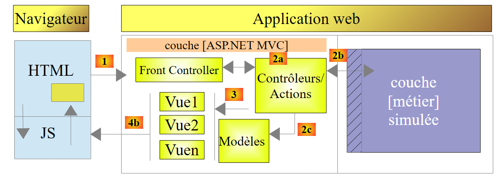 |
Utilizaremos dos herramientas:
- Visual Studio Express 2012 for Desktop, que se utilizará para crear la capa [de negocio];
- Visual Studio Express 2012 for the Web, que se utilizará para crear la capa [web].
Con Visual Studio Express for Desktop, creamos una solución [pam-td]:
 |
- En [1], selecciona una aplicación C#;
- En [2], selecciona [Aplicación de consola];
- En [3], asigne un nombre a la solución;
- En [4], cree un directorio para esta solución;
- en [5], asigne un nombre a la capa [business];
- en [6], la solución generada.
9.7.2. La interfaz de la capa [business]
En una arquitectura por capas, es una buena práctica que la comunicación entre capas se realice a través de interfaces:
 |
¿Qué interfaz debe presentar la capa [de negocio] a la capa [web]? ¿Qué interacciones son posibles entre estas dos capas? Recordemos la interfaz web que se presentará al usuario:
 |
- Al mostrar el formulario por primera vez, debería aparecer la lista de empleados en [1]. Basta con una lista simplificada (apellidos, nombre, número de la Seguridad Social). El número de la Seguridad Social es necesario para acceder a información adicional sobre el empleado seleccionado (campos del 6 al 11).
- La información del 12 al 15 corresponde a las distintas tasas de cotización.
- La información del 16 al 19 son las prestaciones del empleado
- Los datos del 20 al 24 son los componentes salariales calculados en función de las entradas del usuario del 1 al 3.
La interfaz [IPamMetier] proporcionada a la capa [web] por la capa [business] debe cumplir los requisitos anteriores. Existen muchas interfaces posibles. Proponemos la siguiente:
using Pam.Metier.Entites;
namespace Pam.Metier.Service
{
public interface IPamMetier
{
// list of all employee identities
Employe[] GetAllIdentitesEmployes();
// ------- salary calculation
FeuilleSalaire GetSalaire(string ss, double heuresTravaillées, int joursTravaillés);
}
}
- línea 7: el método que rellenará el cuadro combinado [1]
- línea 10: el método que recuperará la información del 6 al 24. Estos datos se han recopilado en un objeto de tipo [PayrollSheet], que describiremos en breve.
Colocaremos esta interfaz en una carpeta [negocio/departamento]:
 |
9.7.3. Entidades en la capa [business]
La interfaz anterior utiliza dos clases, [Employee] y [PayStub], que debemos definir:
- [Employee] representa una fila de la tabla [employees] de la base de datos;
- [Nómina] representa la nómina de un empleado.
Las entidades se colocarán en una carpeta [business/entities] dentro del proyecto:
 |
En la arquitectura final, la capa [business] manipulará las representaciones de las entidades de la base de datos:
Utilizaremos las siguientes clases para representar las filas de las tres tablas de la base de datos. Consulte la sección 9.4 para conocer el significado de los distintos campos.
Clase [Employee]
Representa una fila de la tabla [employees]. Su código es el siguiente:
using System;
namespace Pam.Metier.Entites
{
public class Employe
{
public string SS { get; set; }
public string Nom { get; set; }
public string Prenom { get; set; }
public string Adresse { get; set; }
public string Ville { get; set; }
public string CodePostal { get; set; }
public Indemnites Indemnites { get; set; }
// signature
public override string ToString()
{
return string.Format("Employé[{0},{1},{2},{3},{4},{5}]", SS, Nom, Prenom, Adresse, Ville, CodePostal);
}
}
}
Clase [Subsidios]
Representa una fila de la tabla [indemnites]. Su código es el siguiente:
using System;
namespace Pam.Metier.Entites
{
public class Indemnites
{
public int Indice { get; set; }
public double BaseHeure { get; set; }
public double EntretienJour { get; set; }
public double RepasJour { get; set; }
public double IndemnitesCp { get; set; }
// signature
public override string ToString()
{
return string.Format("Indemnités[{0},{1},{2},{3},{4}]", Indice, BaseHeure, EntretienJour, RepasJour, IndemnitesCp);
}
}
}
Clase [Contribuciones]
Representa una fila de la tabla [contributions]. Su código es el siguiente:
using System;
namespace Pam.Metier.Entites
{
public class Cotisations
{
public double CsgRds { get; set; }
public double Csgd { get; set; }
public double Secu { get; set; }
public double Retraite { get; set; }
// signature
public override string ToString()
{
return string.Format("Cotisations[{0},{1},{2},{3}]", CsgRds, Csgd, Secu, Retraite);
}
}
}
Tenga en cuenta que las clases no incluyen las columnas [ID] y [VERSIONING] de las tablas. Estas columnas, que resultan útiles al utilizar el ORM de EF5, no son necesarias en el contexto de la capa [business] simulada.
La clase [FeuilleS al] encapsula la información del 6 al 24 del formulario ya presentado:
namespace Pam.Metier.Entites
{
public class FeuilleSalaire
{
// automatic properties
public Employe Employe { get; set; }
public Cotisations Cotisations { get; set; }
public ElementsSalaire ElementsSalaire { get; set; }
// ToString
public override string ToString()
{
return string.Format("[{0},{1},{2}]", Employe, Cotisations, ElementsSalaire);
}
}
}
- línea 7: campos del 6 al 11 para el empleado cuyo salario se está calculando, y campos del 16 al 19 para sus complementos. Tenga en cuenta que un objeto [Employee] encapsula un objeto [Allowances] que representa sus complementos;
- línea 8: información de los campos 12 a 15;
- línea 9: información de la 20 a la 24;
- líneas 12-14: el método [ToString].
La clase [Elements Salaire] encapsula la información de los campos 20 a 24 del formulario:
namespace Pam.Metier.Entites
{
public class ElementsSalaire
{
// automatic properties
public double SalaireBase { get; set; }
public double CotisationsSociales { get; set; }
public double IndemnitesEntretien { get; set; }
public double IndemnitesRepas { get; set; }
public double SalaireNet { get; set; }
// ToString
public override string ToString()
{
return string.Format("[{0} : {1} : {2} : {3} : {4} ]", SalaireBase, CotisationsSociales, IndemnitesEntretien, IndemnitesRepas, SalaireNet);
}
}
}
- líneas 6-10: componentes del salario tal y como se explican en las reglas de negocio descritas anteriormente;
- línea 6: el salario base del empleado, basado en el número de horas trabajadas;
- línea 7: cotizaciones deducidas de este salario base;
- líneas 8 y 9: complementos que se añaden al salario base, en función del grado del empleado y del número de días trabajados;
- línea 10: el salario neto a pagar;
- líneas 14-17: el método [ToString] de la clase.
9.7.4. La clase [PamException]
Creamos un tipo de excepción específico para nuestra aplicación. Se trata del siguiente tipo [PamException]:
using System;
namespace Pam.Metier.Entites
{
// exceptional class
public class PamException : Exception
{
// the error code
public int Code { get; set; }
// manufacturers
public PamException()
{
}
public PamException(int Code)
: base()
{
this.Code = Code;
}
public PamException(string message, int Code)
: base(message)
{
this.Code = Code;
}
public PamException(string message, Exception ex, int Code)
: base(message, ex)
{
this.Code = Code;
}
}
}
- línea 6: la clase deriva de la clase [Exception];
- línea 10: tiene una propiedad pública [Code] que es un código de error;
- En nuestra aplicación, utilizaremos dos tipos de constructores:
- el de las líneas 23–27, que se puede utilizar como se muestra a continuación:
- (continuación)
- o el de las líneas 29–33, diseñado para propagar una excepción que se haya producido envolviéndola en una excepción [PamException]:
try{
....
}catch (IOException ex){
// on encapsule l'exception ex
throw new PamException("Problème d'accès aux données",ex,10);
}
Este segundo método tiene la ventaja de no perder la información que pueda contener la primera excepción.
9.7.5. Implementación de la capa [business]
La interfaz [IPamMetier] se implementará mediante la siguiente clase [PamMetier]:
using System;
using Pam.Metier.Entites;
using System.Collections.Generic;
namespace Pam.Metier.Service
{
public class PamMetier : IPamMetier
{
// list of cached employees
public Employe[] Employes { get; set; }
// employees indexed by their SS number
private IDictionary<string, Employe> dicEmployes = new Dictionary<string, Employe>();
// list of employees
public Employe[] GetAllIdentitesEmployes()
{
...
// we return the list of employees
return Employes;
}
// salary calculation
public FeuilleSalaire GetSalaire(string ss, double heuresTravaillées, int joursTravaillés)
{
...
}
}
- línea 7: la clase [PamMetier] implementa la interfaz [IPamMetier];
- línea 10: la clase [PamMetier] mantiene la lista de empleados en caché;
- línea 12: un diccionario que asocia a cada empleado con su número de la seguridad social;
- líneas 15-20: el método que devuelve la lista de empleados;
- líneas 23-26: el método que calcula el salario de un empleado.
El método [GetAllIdentitesEmploye] es el siguiente:
// list of employees
public Employe[] GetAllIdentitesEmployes()
{
if (Employes == null)
{
// we create a table of three employees
Employes = new Employe[3];
Employes[0] = new Employe()
{
SS = "254104940426058",
Nom = "Jouveinal",
Prenom = "Marie",
Adresse = "5 rue des oiseaux",
Ville = "St Corentin",
CodePostal = "49203",
Indemnites = new Indemnites() { Indice = 2, BaseHeure = 2.1, EntretienJour = 2.1, RepasJour = 3.1, IndemnitesCp = 15 }
};
dicEmployes.Add(Employes[0].SS, Employes[0]);
Employes[1] = new Employe()
{
SS = "260124402111742",
Nom = "Laverti",
Prenom = "Justine",
Adresse = "La brûlerie",
Ville = "St Marcel",
CodePostal = "49014",
Indemnites = new Indemnites() { Indice = 1, BaseHeure = 1.93, EntretienJour = 2, RepasJour = 3, IndemnitesCp = 12 }
};
dicEmployes.Add(Employes[1].SS, Employes[1]);
// a fictitious employee who will not be included in the dictionary
// to simulate a non-existent employee
Employes[2] = new Employe()
{
SS = "XX",
Nom = "X",
Prenom = "X",
Adresse = "X",
Ville = "X",
CodePostal = "X",
Indemnites = new Indemnites() { Indice = 0, BaseHeure = 0, EntretienJour = 0, RepasJour = 0, IndemnitesCp = 0 }
};
}
// we return the list of employees
return Employes;
}
- línea 4: comprobamos si la lista de empleados aún no se ha creado;
- línea 7: si no es así, creamos una matriz de tres empleados;
- líneas 8–17: el primer empleado;
- línea 18: se añade al diccionario;
- líneas 19-28: el segundo empleado;
- línea 29: se añade al diccionario;
- líneas 32–42: el tercer empleado. Este no se añade al diccionario por una razón que explicaremos.
El método [GetSalary] será el siguiente:
// salary calculation
public FeuilleSalaire GetSalaire(string ss, double heuresTravaillées, int joursTravaillés)
{
// we retrieve employee n° SS
Employe e = dicEmployes.ContainsKey(ss) ? dicEmployes[ss] : null;
// exists?
if (e == null)
{
throw new PamException(string.Format("L'employé de n° SS [{0}] n'existe pas", ss), 10);
}
// a fictitious payslip is returned
return new FeuilleSalaire()
{
Employe = e,
Cotisations = new Cotisations() { CsgRds = 3.49, Csgd = 6.15, Secu = 9.38, Retraite = 7.88 },
ElementsSalaire = new ElementsSalaire() { CotisationsSociales = 100, IndemnitesEntretien = 100, IndemnitesRepas = 100, SalaireBase = 100, SalaireNet = 100 }
};
}
- línea 2: el método recibe el número de la seguridad social del empleado para el que queremos calcular el salario, el número de horas trabajadas y el número de días trabajados;
- línea 5: buscamos al empleado en el diccionario. Recuerda que uno de ellos no está ahí;
- líneas 7–10: si no se encuentra al empleado, se lanza una [PamException];
- líneas 12-17: se devuelve una nómina ficticia.
9.7.6. La prueba de consola para la capa [business]
El proyecto de la capa [business] tiene actualmente este aspecto:
 |
La clase [Program] anterior probará los métodos de la interfaz [IPamMetier]. Un ejemplo básico podría ser el siguiente:
using Pam.Metier.Entites;
using Pam.Metier.Service;
using System;
namespace Pam.Metier.Tests
{
class Program
{
public static void Main()
{
// instantiation layer [business]
IPamMetier pamMetier = new PamMetier();
// list of employees
Employe[] employes = pamMetier.GetAllIdentitesEmployes();
Console.WriteLine("Liste des employés--------------------");
foreach (Employe e in employes)
{
Console.WriteLine(e);
}
// payslip calculations
Console.WriteLine("Calculs de feuilles de salaire-----------------");
Console.WriteLine(pamMetier.GetSalaire(employes[0].SS, 30, 5));
Console.WriteLine(pamMetier.GetSalaire(employes[1].SS, 150, 20));
try
{
Console.WriteLine(pamMetier.GetSalaire(employes[2].SS, 150, 20));
}
catch (PamException ex)
{
Console.WriteLine(string.Format("PamException : {0}", ex.Message));
}
}
}
}
- línea 12: instanciación de la capa [business];
- líneas 14–19: prueba del método [GetAllEmployeeIDs] de la interfaz [IPamMetier];
- líneas 21–31: prueba del método [GetSalaire] de la interfaz [IPamMetier].
Al ejecutar este programa de consola se obtienen los siguientes resultados:
Se invita al lector a establecer la conexión entre estos resultados y el código ejecutado.
Para poder utilizar este proyecto en el proyecto web que vamos a desarrollar, lo vamos a convertir en una biblioteca de clases:
 |
- en [1], en las propiedades del archivo [Program.cs];
- en [2], especificamos que el archivo no formará parte del ensamblado generado;
- en [3, 4], en las propiedades del proyecto [pam-metier-simule], en la opción [Application] [3], especificamos [4] que la compilación debe generar una biblioteca de clases (en forma de DLL).
 |
- En [5], especificamos un ensamblado [Release]. El otro tipo es [Debug]. El ensamblado contiene entonces información para facilitar la depuración;
- En [6], genere el proyecto [pam-metier-simule];
 |
- En [7], mostramos todos los archivos de la solución;
- En [8], en la carpeta [bin/Release], se encuentra el archivo DLL de nuestro proyecto.
9.8. Paso 2: Configuración de la aplicación web
En la solución anterior de Visual Studio, crearemos el proyecto para la capa web MVC.
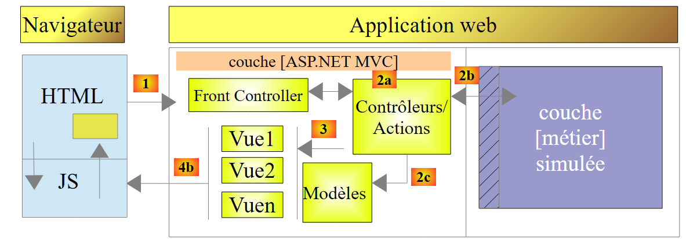 |
Con Visual Studio Express for the Web, abrimos la solución [pam-td] creada anteriormente con Visual Studio Express for the Desktop.
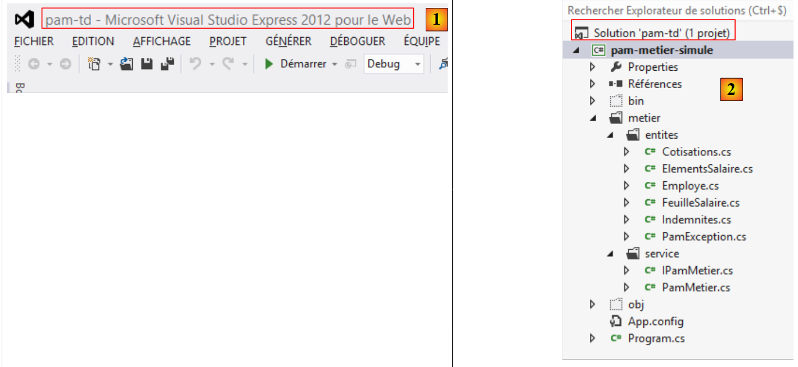 |
- En [1], la solución [pam-td] se ha cargado en Visual Studio Express for the Web;
- En [2], la solución y el proyecto para la capa [business] simulada que acabamos de crear.
En este nuevo paso, crearemos el esqueleto de la aplicación web.
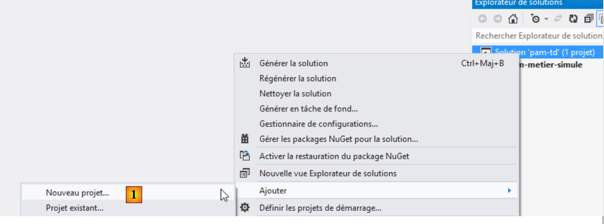 |
- En [1], añadimos un nuevo proyecto a la solución [pam-td];
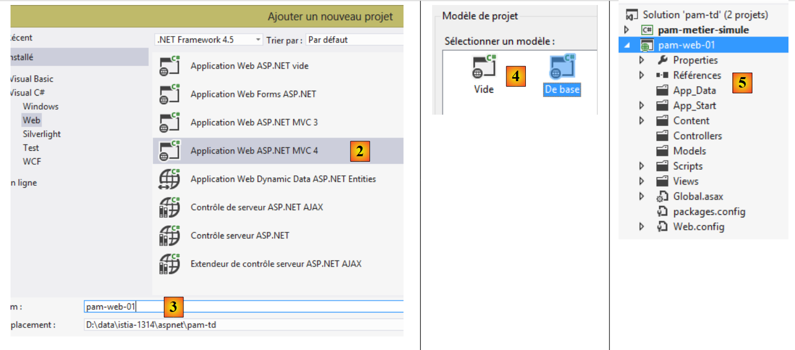 |
- en [2], seleccionamos un proyecto ASP.NET MVC 4;
- denominado [pam-web-01] [3];
- En [4], selecciona la plantilla ASP.NET MVC básica;
- en [5], se crea el proyecto;
 |
- en [6], establecemos el nuevo proyecto como proyecto de inicio de la solución, el que se ejecutará cuando pulsemos [Ctrl-F5];
- En [7], el nombre del nuevo proyecto aparece en negrita, lo que indica que es el proyecto de inicio de la solución.
Ahora, utilizando el Explorador de Windows, sustituya la carpeta [Content] del proyecto por la carpeta [étudedecas-support / web / Content]. Una vez hecho esto, debe incluir los nuevos archivos en el proyecto [pam-web-01]. Proceda de la siguiente manera:
 |
- En [1], actualice la solución;
- en [2], muestra todos los archivos de la solución;
- en [3], aparecerá una carpeta [Images];
- que se incluye en el proyecto en [4].
En la carpeta [Scripts], añade los scripts de JQuery Globalization [1] necesarios para la validación del lado del cliente.
 |
La página maestra [_Layout.cshtml] [2] tendrá el siguiente contenido:
<!DOCTYPE html>
<html>
<head>
<title>@ViewBag.Title</title>
<meta charset="utf-8" />
<meta name="viewport" content="width=device-width" />
<link rel="stylesheet" href="~/Content/Site.css" />
<script type="text/javascript" src="~/Scripts/jquery-1.8.2.min.js"></script>
<script type="text/javascript" src="~/Scripts/jquery.validate.min.js"></script>
<script type="text/javascript" src="~/Scripts/jquery.validate.unobtrusive.min.js"></script>
<script type="text/javascript" src="~/Scripts/globalize/globalize.js"></script>
<script type="text/javascript" src="~/Scripts/globalize/cultures/globalize.culture.fr-FR.js"></script>
<script type="text/javascript" src="~/Scripts/jquery.unobtrusive-ajax.js"></script>
<script type="text/javascript" src="~/Scripts/myScripts.js"></script>
</head>
<body>
<table>
<tbody>
<tr>
<td>
<h2>Simulateur de calcul de paie</h2>
</td>
<td style="width: 20px">
<img id="loading" style="display: none" src="~/Content/images/indicator.gif" />
</td>
<td>
<a id="lnkFaireSimulation" href="javascript:faireSimulation()">| Faire la simulation<br />
</a>
<a id="lnkEffacerSimulation" href="javascript:effacerSimulation()">| Effacer la simulation<br />
</a>
<a id="lnkVoirSimulations" href="javascript:voirSimulations()">| Voir les simulations<br />
</a>
<a id="lnkRetourFormulaire" href="javascript:retourFormulaire()">| Retour au formulaire de simulation<br />
</a>
<a id="lnkEnregistrerSimulation" href="javascript:enregistrerSimulation()">| Enregistrer la simulation<br />
</a>
<a id="lnkTerminerSession" href="javascript:terminerSession()">| Terminer la session<br />
</a>
</td>
</tbody>
</table>
<hr />
<div id="content">
@RenderBody()
</div>
</body>
</html>
Nota: En la línea 8, ajusta la versión de jQuery para que coincida con tu versión de Visual Studio.
- Línea 7: referencia a la hoja de estilos de la aplicación;
- Líneas 8-10: referencias a los scripts necesarios para la validación del lado del cliente;
- líneas 11-12: referencias a los scripts necesarios para introducir números decimales franceses con coma;
- Línea 13: referencia a los scripts necesarios para el modo Ajax;
- Línea 14: scripts específicos de la aplicación;
- línea 24: la imagen de carga para las llamadas Ajax;
- líneas 26-39: seis enlaces JavaScript;
- Línea 43: la sección donde se mostrarán las distintas vistas de la aplicación;
- Línea 44: el cuerpo de las distintas vistas de la aplicación.
A continuación, modificaremos la ruta predeterminada de la aplicación:
 |
El archivo [RouteConfig] tendrá el siguiente contenido:
using System.Web.Mvc;
using System.Web.Routing;
namespace pam_web_01
{
public class RouteConfig
{
public static void RegisterRoutes(RouteCollection routes)
{
routes.IgnoreRoute("{resource}.axd/{*pathInfo}");
routes.MapRoute(
name: "Default",
url: "{controller}/{action}",
defaults: new { controller = "Pam", action = "Index" }
);
}
}
}
- línea 14: las URL tendrán el formato [{controlador}/{acción}];
- línea 15: si no se especifica ninguna acción, se utilizará la acción [Index]. Si no se especifica ningún controlador, se utilizará el controlador [Pam].
Como resultado de esta configuración, la URL [/] es equivalente a la URL [/Pam/Index]. Dado que nuestra aplicación es una API, la URL [/] será su única URL.
Crea el controlador [Pam]:

Modifica el [PamController] de la siguiente manera:
using System.Web.Mvc;
namespace Pam.Web.Controllers
{
public class PamController : Controller
{
[HttpGet]
public ViewResult Index()
{
return View();
}
}
}
- línea 3: colocamos el controlador en el espacio de nombres [Pam.Web.Controllers];
- línea 7: la acción [Index] solo gestionará la solicitud HTTP GET;
- línea 8: devolvemos un tipo [ViewResult] en lugar de un tipo [ActionResult].
Ahora crea la vista [Index.cshtml] que muestra la acción [Index] anterior:
 |
Modifica [Index.cshtml] de la siguiente manera:
@{
ViewBag.Title = "Pam";
}
<h2>Formulaire</h2>
Ejecute la aplicación pulsando [Ctrl-F5]. Debería ver la siguiente página:

Tarea: Explica qué ha pasado.
La aplicación utiliza una hoja de estilo a la que se hace referencia en la página maestra [_Layout.cshtml]:
<link rel="stylesheet" href="~/Content/Site.css" />
La hoja de estilo [/Content/Site.css] define una imagen de fondo para las páginas de la aplicación:
body {
background-image: url("/Content/Images/standard.jpg");
}
 |
9.9. Paso 3: Implementación del modelo SPU
Queremos escribir una aplicación siguiendo el modelo SPU (aplicación de página única) descrito en las secciones 7.5 y 7.6. La página única es la que carga el navegador cuando se inicia la aplicación:
 |
- la sección [1] anterior es la parte fija de la página única. Hemos visto que la proporciona la página maestra [_Layout.cshtml];
- La parte [2] es la parte variable de la página única. Se encuentra dentro de la región de ID [content] de la página maestra [_Layout.cshtml]:
<!DOCTYPE html>
<html>
<head>
<title>@ViewBag.Title</title>
...
<script type="text/javascript" src="~/Scripts/myScripts.js"></script>
</head>
<body>
<table>
...
</table>
<hr />
<div id="content">
@RenderBody()
</div>
</body>
</html>
Los distintos fragmentos de página de la aplicación se mostrarán en la región con el ID [content] en la línea 13. Se mostrarán mediante llamadas Ajax. Los scripts de JavaScript que ejecutan estas llamadas se encuentran en el archivo [myScripts.js] al que se hace referencia en la línea 6. Crea este archivo, que necesitaremos:
 |
Ahora estamos siguiendo el modelo APU descrito en la sección 7.6. Vuelve a leer esa sección si la has olvidado. A continuación, configuraremos los distintos fragmentos de página que muestra la aplicación.
9.9.1. Herramientas de desarrollo de JavaScript
Recuerda que con el navegador Chrome dispones de una serie de herramientas para depurar el HTML, el CSS y el JavaScript de tus páginas. Estas herramientas se presentaron parcialmente en la sección 7.2. En el modelo APU, los navegadores almacenan en caché los scripts de JavaScript a los que hace referencia la primera página de la aplicación. Por lo tanto, debes recordar borrar esta caché cuando modifiques tus scripts; de lo contrario, es posible que los cambios no se apliquen. A continuación te explicamos cómo hacerlo en Chrome:
- Pulsa [Ctrl-Shift-I] para abrir las herramientas de desarrollo
 |
- Haz clic en el icono [1] situado en la esquina inferior derecha de la consola de desarrollo;
- luego marca la opción [2] que desactiva la caché en el modo de desarrollador.
9.9.2. Uso de una vista parcial para mostrar el formulario
El formulario de entrada es uno de los fragmentos que muestra la aplicación. Actualmente, este formulario se muestra mediante la vista [Index.cshtml], que es una vista completa:
@{
ViewBag.Title = "Pam";
}
<h2>Formulaire</h2>
Esta vista se muestra mediante la acción [Index]:
[HttpGet]
public ViewResult Index()
{
return View();
}
La línea 4 anterior muestra que se está mostrando una [View], no una [PartialView]. Necesitamos una vista parcial para el formulario, que será un fragmento de página. Modificamos la vista [Index.cshtml] de la siguiente manera:
@{
ViewBag.Title = "Pam";
}
@Html.Partial("Formulaire")
Línea 4: El formulario ya no forma parte de la página [Index.cshtml]. Ahora se encuentra en una vista parcial [Form.cshtml]:
 |
El código de [Form.cshtml] es simplemente el siguiente:
<h2>Formulaire</h2>
Realice estos cambios y compruebe que sigue obteniendo la siguiente vista cuando se inicia la aplicación:
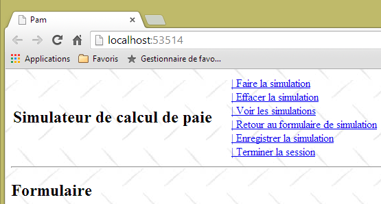
9.9.3. La llamada Ajax [runSimulation]
Nos interesa el fragmento que se muestra cuando el usuario hace clic en el enlace [Run Simulation]:
 |
- En [1], el usuario hace clic en el enlace [Ejecutar simulación];
- en [2], la simulación aparece debajo del formulario.
Actualizamos la vista parcial [Formulaire.cshtml] que muestra el formulario de la siguiente manera:
<h2>Formulaire</h2>
<div id="simulation" />
Línea 3: Creamos una región con el ID [simulation] para contener el fragmento de simulación.
Creamos la siguiente vista parcial [Simulation.cshtml]:
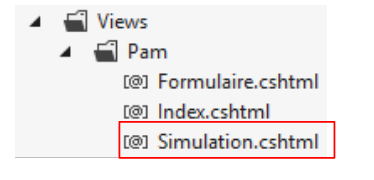 |
El contenido de la vista [Simulation.cshtml] es el siguiente:
<hr />
<h2>Simulation</h2>
Ahora tenemos que escribir el código JavaScript que gestiona el clic en el enlace [Run Simulation]. Seguiremos el procedimiento descrito en la sección 7.6.5. En primer lugar, veamos el código HTML del enlace en [_Layout.cshtml]:
<a id="lnkFaireSimulation" href="javascript:faireSimulation()">| Faire la simulation<br />
</a>
Podemos ver que al hacer clic en el enlace [Ejecutar simulación] se activará la ejecución de la función JS [runSimulation]. Esta función se escribirá en el archivo [myScripts.js], junto con las demás funciones JS que requiere la aplicación:
// global variables
var loading;
var content;
function faireSimulation() {
// make a manual Ajax call
...
}
function effacerSimulation() {
// delete form entries
...
}
function enregistrerSimulation() {
// make a manual Ajax call
...
}
function voirSimulations() {
// make a manual Ajax call
...
}
function retourFormulaire() {
// make a manual Ajax call
...
}
function terminerSession() {
...
}
// document loading
$(document).ready(function () {
// retrieve the references of the page's various components
loading = $("#loading");
content = $("#content");
});
- líneas 35–39: la función jQuery que se ejecuta al iniciar la aplicación;
- líneas 37-38: inicializa las variables globales de las líneas 2 y 3.
Tenga en cuenta que los elementos con los ID [loading] y [content] se definen en la página maestra [_Layout.cshtml] (líneas 14 y 21 a continuación):
<!DOCTYPE html>
<html>
<head>
...
</head>
<body>
<table>
<tbody>
<tr>
<td>
<h2>Simulateur de calcul de paie</h2>
</td>
<td style="width: 20px">
<img id="loading" style="display: none" src="~/Content/images/indicator.gif" />
</td>
...
</td>
</tbody>
</table>
<hr />
<div id="content">
@RenderBody()
</div>
</body>
</html>
Tarea: Siguiendo el procedimiento descrito en la sección 7.6.5, escribe la función JS [faireSimulation]. Esta función enviará una solicitud Ajax de tipo POST a la acción [/Pam/FaireSimulation]. No se enviarán datos en este momento. La acción [/Pam/FaireSimulation] devolverá la vista parcial [Simulation.cshtml] a la función JS [faireSimulation], que a continuación colocará esta salida HTML en la región con el id [simulation] del formulario.
Pruebe el enlace [Run Simulation] en su aplicación.
9.9.4. La llamada Ajax [enregistrerSimulation]
El enlace [Guardar simulación] se define de la siguiente manera en [_Layout.cshtml]:
<a id="lnkEnregistrerSimulation" href="javascript:enregistrerSimulation()">| Enregistrer la simulation<br />
</a>
Tarea: Siguiendo los pasos anteriores, escribe la función JS [enregistrerSimulation]. Esta función enviará una llamada Ajax de tipo POST a la acción [/Pam/EnregistrerSimulation]. No se enviarán datos en este momento. La acción [/Pam/EnregistrerSimulation] devolverá la vista parcial [Simulations.cshtml] a la función JS [enregistrerSimulation], que a continuación colocará este flujo HTML en la región con el id [content] de la página maestra.
La vista [Simulations.cshtml] es la siguiente:
 |
Su contenido es el siguiente:
<h2>Simulations</h2>
A continuación se muestra un ejemplo de ejecución:
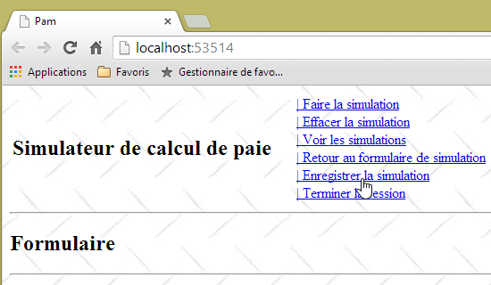

9.9.5. La llamada Ajax [viewSimulations]
El enlace [Ver simulaciones] se define de la siguiente manera en [_Layout.cshtml]:
<a id="lnkVoirSimulations" href="javascript:voirSimulations()">| Voir les simulations<br />
</a>
Tarea: Siguiendo el procedimiento anterior, escribe la función JS [viewSimulations]. Esta función enviará una llamada Ajax de tipo POST a la acción [/Pam/ViewSimulations]. Por ahora no se enviarán datos. La acción [/Pam/VoirSimulations] devolverá la vista parcial [Simulations.cshtml] a la función JS [voirSimulations], que a continuación colocará esta salida HTML en la región con el id [content] de la página maestra.
La vista [Simulations.cshtml] es la que ya se utilizó en la pregunta anterior.
A continuación se muestra un ejemplo de ejecución:
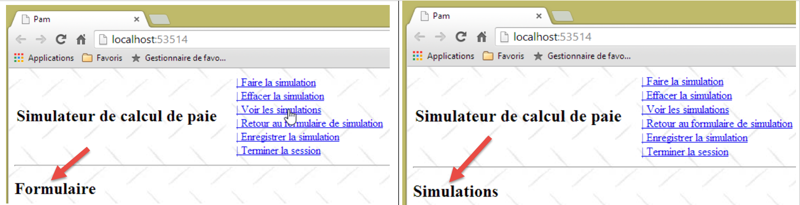 |
9.9.6. La llamada Ajax [returnToForm]
El enlace [Volver al formulario de simulación] se define de la siguiente manera en [_Layout.cshtml]:
<a id="lnkRetourFormulaire" href="javascript:retourFormulaire()">| Retour au formulaire de simulation<br />
</a>
Tarea: Siguiendo los pasos anteriores, escribe la función JS [returnForm]. Esta función enviará una solicitud Ajax de tipo POST a la acción [/Pam/Form]. No se enviarán datos en este momento. La acción [/Pam/Formulaire] devolverá la vista parcial [Formulaire.cshtml] a la función JS [retourFormulaire], que a continuación colocará este flujo HTML en la región con el id [content] de la página maestra.
La vista [Formulaire.cshtml] ya se ha definido. A continuación se muestra un ejemplo de ejecución:
 |
9.9.7. La llamada Ajax [endSession]
El enlace [End Session] se define de la siguiente manera en [_Layout.cshtml]:
<a id="lnkTerminerSession" href="javascript:terminerSession()">| Terminer la session<br />
</a>
Tarea: Siguiendo el procedimiento anterior, escribe la función JS [terminerSession]. Esta función enviará una llamada Ajax de tipo POST a la acción [/Pam/TerminerSession]. Por ahora no se enviarán datos. La acción [/Pam/TerminerSession] devolverá la vista parcial [Formulaire.cshtml] a la función JS [terminerSession], que a continuación colocará este flujo HTML en la región con el id [content] de la página maestra.
A continuación se muestra un ejemplo de ejecución:
 |
9.9.8. La función JS [clearSimulation]
El enlace [Clear Simulation] se define de la siguiente manera en [_Layout.cshtml]:
<a id="lnkEffacerSimulation" href="javascript:effacerSimulation()">| Effacer la simulation<br />
</a>
El propósito de la función JS [clearSimulation] es:
- ocultar el fragmento [Simulación] si existe;
- restablecer los campos de entrada del formulario a su estado inicial al cargar la aplicación (cuando haya campos de entrada; por ahora, no hay ninguno).
Tarea: Escribe la función JS [clearSimulation]. Aquí no hay ninguna llamada Ajax. Este proceso se lleva a cabo dentro del navegador y no implica al servidor.
Aquí tienes un ejemplo de ejecución:
 |
9.9.9. Gestión de la navegación entre pantallas
Por ahora, los enlaces se muestran siempre. Ahora gestionaremos su visualización mediante una función de JavaScript. En primer lugar, repasemos el código de los seis enlaces de JavaScript en [_Layout.cshtml]:
<a id="lnkFaireSimulation" href="javascript:faireSimulation()">| Faire la simulation<br />
</a>
<a id="lnkEffacerSimulation" href="javascript:effacerSimulation()">| Effacer la simulation<br />
</a>
<a id="lnkVoirSimulations" href="javascript:voirSimulations()">| Voir les simulations<br />
</a>
<a id="lnkRetourFormulaire" href="javascript:retourFormulaire()">| Retour au formulaire de simulation<br />
</a>
<a id="lnkEnregistrerSimulation" href="javascript:enregistrerSimulation()">| Enregistrer la simulation<br />
</a>
<a id="lnkTerminerSession" href="javascript:terminerSession()">| Terminer la session<br />
</a>
Todos los enlaces tienen un atributo [id] que nos permitirá gestionarlos en JavaScript. Modificamos el método JavaScript que se ejecuta al cargar la página de la siguiente manera:
// variables globales
var loading;
var content;
var lnkFaireSimulation;
var lnkEffacerSimulation
var lnkEnregistrerSimulation;
var lnkTerminerSession;
var lnkVoirSimulations;
var lnkRetourFormulaire;
var options;
...
// au chargement du document
$(document).ready(function () {
// on récupère les références des différents composants de la page
loading = $("#loading");
content = $("#content");
// les liens du menu
lnkFaireSimulation = $("#lnkFaireSimulation");
lnkEffacerSimulation = $("#lnkEffacerSimulation");
lnkEnregistrerSimulation = $("#lnkEnregistrerSimulation");
lnkVoirSimulations = $("#lnkVoirSimulations");
lnkTerminerSession = $("#lnkTerminerSession");
lnkRetourFormulaire = $("#lnkRetourFormulaire");
// on les met dans un tableau
options = [lnkFaireSimulation, lnkEffacerSimulation, lnkEnregistrerSimulation, lnkVoirSimulations, lnkTerminerSession, lnkRetourFormulaire];
// on cache certains éléments de la page
loading.hide();
// on fixe le menu
setMenu([lnkFaireSimulation, lnkVoirSimulations, lnkTerminerSession]);
});
- líneas 19–24: se recuperan las referencias de los seis enlaces. Estas referencias se definen como variables globales en las líneas 4–9;
- línea 26: la matriz [options] se inicializa con las seis referencias. Esta matriz se define como variable global en la línea 10;
- línea 28: ocultar la imagen animada que indica que hay llamadas Ajax pendientes;
- línea 30: se muestran los enlaces [lnkFaireSimulation, lnkVoirSimulations, lnkTerminerSession]. Los demás se ocultarán.
La función JS [setMenu] es la siguiente:
function setMenu(show) {
// display table links [show]
...
}
Tarea: Escribe la función JS [setMenu].
Si T es una matriz de enlaces:
- T.length es el número de enlaces;
- T[i] es el enlace número i;
- T[i].show() muestra el enlace número i;
- T[i].hide() oculta el enlace número i.
Con estas nuevas funciones JS, la página que se muestra al iniciar es la siguiente:
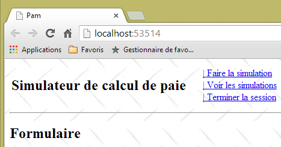
Adapta las funciones JS [runSimulation, clearSimulation, saveSimulation, viewSimulations, returnToForm, endSession] para mostrar las siguientes pantallas:


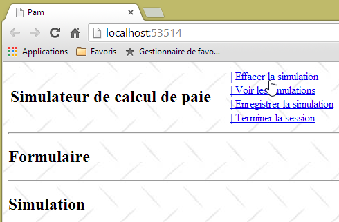
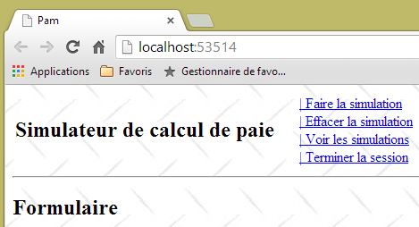


Ahora que el modelo APU y los enlaces de navegación están listos, podemos pasar a escribir las acciones y vistas del lado del servidor. A medida que avance por los pasos, verá que algunos de los enlaces Ajax que actualmente funcionan dejarán de hacerlo, ya que modificará las vistas parciales enviadas al cliente. A medida que cree las distintas acciones y vistas del lado del servidor, los enlaces Ajax del lado del cliente volverán a funcionar como estaba previsto.
9.10. Paso 4: Escribir la acción del servidor [Index]
Actualmente, cuando se inicia la aplicación, vemos la siguiente pantalla:
En lugar de esta pantalla, nos gustaría ver lo siguiente:

Es la acción [Index] la que debe generar esta página. Hagamos algunas observaciones:
- La página muestra un formulario con tres campos de entrada:
- el empleado cuyo salario se está calculando,
- el número de horas trabajadas,
- el número de días trabajados;
- el formulario se envía a través del enlace [Ejecutar simulación];
- se debe verificar la validez de los campos de entrada [Horas trabajadas] y [Días trabajados];
- la lista de empleados procede de la capa [negocio] que creamos anteriormente.
Repasemos el código actual de la acción [Índice]:
[HttpGet]
public ViewResult Index()
{
return View();
}
el de la vista [Index.cshtml] que muestra esta acción:
@{
ViewBag.Title = "Pam";
}
@Html.Partial("Formulaire")
y la vista parcial [Formulaire.cshtml]:
<h2>Formulaire</h2>
Los cambios se realizarán en estas tres ubicaciones.
9.10.1. La plantilla del formulario
Volvamos al flujo de procesamiento de la URL [/Pam/Index]:
 |
- la solicitud HTTP del cliente llega a [1];
- en [2], la información contenida en la solicitud se convierte en un modelo de acción [3] que sirve como entrada para la acción [4];
- en [4], la acción, basándose en este modelo, generará una respuesta. Esta respuesta tendrá dos componentes: una vista V [6] y el modelo M de esta vista [5];
- la vista V [6] utilizará su modelo M [5] para generar la respuesta HTTP para el cliente.
La acción que nos interesa es la acción [Index], que actualmente tiene este aspecto:
[HttpGet]
public ViewResult Index()
{
return View();
}
La acción [Index] no pasa ningún modelo a la vista [Index.cshtml]. Por lo tanto, no podrá mostrar la lista de empleados. Esta lista se puede solicitar desde la capa [business]. Para ello, el proyecto [pam-web-01] debe tener una referencia al proyecto [pam-metier-simule]. Vamos a crear esta referencia ahora:
 |
- en [1], haga clic con el botón derecho en [Referencias] en el proyecto [pam-web-01] y, a continuación, seleccione [Agregar referencia];
- en [2], seleccione la opción [Solución] y, a continuación, el proyecto [pam-metier-simule] en [3];
- en [4], el proyecto [pam-metier-simule] se ha añadido a las referencias del proyecto [pam-web-01].
9.10.2. El modelo de aplicación
En la sección 4.10, en la página 70, presentamos los conceptos importantes del modelo de aplicación y del modelo de sesión. Ahora los utilizaremos. Recordemos que en el modelo colocamos:
- un modelo de aplicación que contiene datos de solo lectura para todos los usuarios. Este modelo constituye una memoria compartida para todas las solicitudes de todos los usuarios;
- datos de sesión de lectura y escritura para un usuario determinado. Este modelo constituye una memoria compartida para todas las solicitudes de ese usuario.
¿Qué incluiremos en el modelo de aplicación? Repasemos su arquitectura:
 |
La capa [web] contiene una referencia a la capa [de negocio]. Esta puede ser compartida por todos los usuarios. Por lo tanto, podemos incluirla en el modelo de aplicación. Además, supondremos que la lista de empleados no cambia. Por lo tanto, puede leerse una vez y luego compartirse entre todos los usuarios. Por lo tanto, proponemos el siguiente modelo de aplicación:
 |
El código de la clase [ApplicationModel] podría ser el siguiente:
using Pam.Metier.Entites;
using Pam.Metier.Service;
namespace PamWeb.Models
{
public class ApplicationModel
{
// --- application scope data ---
public Employe[] Employes { get; set; }
public IPamMetier PamMetier { get; set; }
}
}
Para mostrar una lista desplegable en una vista, se escribe algo como lo siguiente:
<!-- the drop-down list -->
<tr>
<td>Liste déroulante</td>
<td>@Html.DropDownListFor(m => m.DropDownListField,
new SelectList(@Model.DropDownListFieldItems, "Value", "Label"))
</td>
</tr>
El método [DropDownListFor] espera un tipo SelectListItem[] como segundo parámetro, que se ha proporcionado anteriormente mediante un tipo [SelectList]. Necesitamos construir dicha matriz con la lista de empleados. Dado que los empleados no cambian, esta matriz también se puede colocar en el modelo de la aplicación. La actualizamos de la siguiente manera:
using Pam.Metier.Entites;
using Pam.Metier.Service;
using System.Web.Mvc;
namespace Pam.Web.Models
{
public class ApplicationModel
{
// --- application scope data ---
public Employe[] Employes { get; set; }
public IPamMetier PamMetier { get; set; }
public SelectListItem[] EmployesItems { get; set; }
}
}
¿Cuándo se debe construir este modelo? Lo demostramos en la sección 4.10. Ocurre cuando se ejecuta el método [Application_Start] del archivo [Global.asax]:
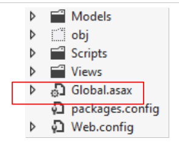 |
El método [Application_Start] es actualmente el siguiente:
using System.Web.Http;
using System.Web.Mvc;
using System.Web.Optimization;
using System.Web.Routing;
namespace pam_web_01
{
public class MvcApplication : System.Web.HttpApplication
{
protected void Application_Start()
{
AreaRegistration.RegisterAllAreas();
WebApiConfig.Register(GlobalConfiguration.Configuration);
FilterConfig.RegisterGlobalFilters(GlobalFilters.Filters);
RouteConfig.RegisterRoutes(RouteTable.Routes);
BundleConfig.RegisterBundles(BundleTable.Bundles);
}
}
}
Lo ampliamos de la siguiente manera:
using Pam.Metier.Entites;
using Pam.Metier.Service;
using PamWeb.Infrastructure;
using PamWeb.Models;
using System.Web.Http;
using System.Web.Mvc;
using System.Web.Optimization;
using System.Web.Routing;
namespace pam_web_01
{
public class MvcApplication : System.Web.HttpApplication
{
protected void Application_Start()
{
// ----------Auto-generated
AreaRegistration.RegisterAllAreas();
WebApiConfig.Register(GlobalConfiguration.Configuration);
FilterConfig.RegisterGlobalFilters(GlobalFilters.Filters);
RouteConfig.RegisterRoutes(RouteTable.Routes);
BundleConfig.RegisterBundles(BundleTable.Bundles);
// -------------------------------------------------------------------
// ---------- specific configuration
// -------------------------------------------------------------------
// application scope data
ApplicationModel application = new ApplicationModel();
Application["data"] = application;
// instantiation layer [business]
application.PamMetier = ...
// employee roster
application.Employes = ...
// employee combo items
application.EmployesItems = ...
// model binder for [ApplicationModel]
...
}
}
}
Tarea: Completa el código del método [Application_Start]. Todo lo que necesitas está en la sección 4.10. Tómate tu tiempo para releer esta sección, que es larga pero importante.
La línea 33 consta en realidad de varias líneas. Para crear un objeto de tipo [SelectListItem], puedes utilizar el siguiente método:
new SelectListItem() { Text = unTexte, Value = uneValeur };
Este [SelectListItem] se utilizará para generar la siguiente etiqueta HTML: <option>
en la lista desplegable. Nos aseguraremos de que:
- el texto sea el nombre del empleado seguido de su apellido;
- aValue sea el número de la Seguridad Social del empleado.
En la línea 35, anterior, necesitará la clase [ApplicationModelBinder] descrita en la sección 4.10, página 74:
 |
9.10.3. El código para la acción [Index]
Ahora que hemos definido un modelo para la aplicación, podemos actualizar el código de la acción [Index] de la siguiente manera:
[HttpGet]
public ViewResult Index(ApplicationModel application)
{
return View();
}
- Línea 4: El modelo de aplicación es ahora un parámetro de la acción [Index]. En la sección 4.10 explicamos cómo el marco inicializa este parámetro.
9.10.4. La plantilla de vista [Index.cshtml]
Ahora, la acción [Index] tiene acceso a los empleados almacenados en el modelo de aplicación. Ahora debe pasarlos a la vista [Index.cshtml], que los mostrará. Podríamos pasar un tipo [ApplicationModel] como modelo de vista a la vista [Index.cshtml], pero pronto veremos que esta vista necesita información adicional que no se encuentra en [ApplicationModel]. Utilizaremos el siguiente modelo de vista [IndexModel]:
 |
namespace Pam.Web.Models
{
public class IndexModel
{
// application scope data
public ApplicationModel Application { get; set; }
}
}
- Línea 6: [IndexModel] contiene el modelo de la aplicación.
La acción [Index] queda así:
[HttpGet]
public ViewResult Index(ApplicationModel application)
{
return View(new IndexModel() { Application = application });
}
- En la línea 4, se muestra la vista predeterminada [Index.cshtml] utilizando un tipo [IndexModel] como modelo, inicializado con datos del modelo de aplicación.
Sabemos que la vista [Index.cshtml] debe mostrar un formulario:
Volvamos al flujo de gestión de solicitudes:
 |
Para la solicitud [GET /Pam/Index]:
- la acción es [Index];
- el modelo para esta acción es [ApplicationModel];
- la vista es [Index.cshtml];
- el modelo para esta vista es [IndexModel].
Cuando se envía el formulario, el flujo de procesamiento será similar:
- la acción es la que gestiona el POST;
- su modelo recopila los valores introducidos, en este caso:
- el número de la Seguridad Social del empleado seleccionado;
- el número de horas trabajadas;
- el número de días trabajados;
Podríamos crear un modelo de acción que combine estos tres valores. También es habitual reutilizar el modelo utilizado para mostrar el formulario. Eso es lo que haremos aquí. La clase [IndexModel] evoluciona de la siguiente manera:
using System.ComponentModel.DataAnnotations;
using System.Web.Mvc;
namespace Pam.Web.Models
{
[Bind(Exclude = "Application")]
public class IndexModel
{
// application scope data
public ApplicationModel Application { get; set; }
// posted values
[Display(Name = "Employé")]
public string SS { get; set; }
[Display(Name = "Heures travaillées")]
[UIHint("Decimal")]
public double HeuresTravaillées { get; set; }
[Display(Name = "Jours travaillés")]
public double JoursTravaillés { get; set; }
}
}
- líneas 13, 16, 18: los tres valores publicados. Tenga en cuenta que [daysWorked] se ha declarado como tipo [double] aunque en realidad se espera un entero. El tipo [double] se introdujo para facilitar la validación de este campo en el lado del cliente, ya que la validación de un tipo [int] había causado problemas;
- líneas 12, 14, 17: etiquetas para los métodos [Html.LabelFor] de la vista asociada al modelo;
- línea 15: una anotación para mostrar el campo [HoursWorked] con dos decimales;
- línea 5: especifica que la propiedad denominada [Application] no se incluye en los valores enviados.
9.10.5. Las vistas [Index.cshtml] y [Formulaire.cshtml]
La vista [Index.cshtml] se muestra mediante la siguiente acción [Index]:
[HttpGet]
public ViewResult Index(ApplicationModel application)
{
return View(new IndexModel() { Application = application });
}
Curiosamente, la vista [Index.cshtml] no ha cambiado:
@{
ViewBag.Title = "Pam";
}
@Html.Partial("Formulaire")
- la vista no declara ningún modelo;
- línea 4: incluye la vista parcial [Form.cshtml], de nuevo sin pasarle ningún modelo. Durante las pruebas, se observó que el modelo [IndexModel] pasado a la vista [Index.cshtml] se propagaba implícitamente a la vista parcial [Form.cshtml]. Esta última vista podría adoptar ahora la siguiente forma:
@model Pam.Web.Models.IndexModel
@using (Html.BeginForm("FaireSimulation", "Pam", FormMethod.Post, new { id = "formulaire" }))
{
<table>
<thead>
<tr>
...
</tr>
</thead>
<tbody>
<tr>
...
</tr>
<tr>
...
</tr>
</tbody>
</table>
}
<div id="simulation" />
- línea 1: la vista recibe un modelo de tipo [IndexModel];
- línea 3: el formulario;
- líneas 6–10: los encabezados de la tabla de entrada;
- líneas 12–14: la fila de entrada;
- líneas 15-17: cualquier mensaje de error.
Tarea: Complete el código de la vista [Formulaire.cshtml]. Utilice los métodos [DropDownListFor, EditorFor, LabelFor, ValidationMessageFor] descritos en la sección 5.7.
9.10.6. Prueba de la acción [Index]
Hemos escrito todos los elementos de la cadena de procesamiento de la URL [/Pam/Index]:
 |
Probamos la aplicación con [Ctrl-F5]:


Debes comprobar que la lista desplegable se ha rellenado con la lista de empleados que definimos en la capa [de negocio] simulada.
9.11. Paso 5: Implementación de la validación de entradas
9.11.1. El problema
Aunque no hayamos hecho nada para habilitarla, la validación del lado del cliente ya está en vigor:


La validación del lado del cliente está habilitada de forma predeterminada debido a la línea 3 que se muestra a continuación en el archivo [Web.config] de la aplicación.
<appSettings>
...
<add key="ClientValidationEnabled" value="true" />
</appSettings>
Sin embargo, dado que en [IndexModel] hemos declarado el campo [JoursTravaillés] como de tipo [double]:
public double JoursTravaillés { get; set; }
podemos introducir un número real en este campo:

Además, podemos introducir valores arbitrarios en ambos campos:

El [IndexModel] del formulario es actualmente el siguiente:
using System.ComponentModel.DataAnnotations;
using System.Web.Mvc;
namespace Pam.Web.Models
{
[Bind(Exclude = "Application")]
public class IndexModel
{
// application scope data
public ApplicationModel Application { get; set; }
// posted values
[Display(Name = "Employé")]
public string SS { get; set; }
[Display(Name = "Heures travaillées")]
[UIHint("Decimal")]
public double HeuresTravaillées { get; set; }
[Display(Name = "Jours travaillés")]
public double JoursTravaillés { get; set; }
}
}
Tarea: Mejora este modelo para:
- mostrar mensajes de error personalizados;
- Acepta solo valores reales en el intervalo [0,400] para el campo [HoursWorked];
- aceptar solo valores enteros en el intervalo [0,31] para el campo [DaysWorked];
Puede consultar el ejemplo de la sección 7.6.2. Para verificar que el número de días trabajados es un número entero, puede utilizar una expresión regular (véanse los ejemplos de la sección 5.9.1).
A continuación se muestran algunos ejemplos de lo que se espera:


9.11.2. Introducción de números reales en formato francés
En la versión actual de la aplicación, el número de horas trabajadas debe ser un número decimal en formato anglosajón (con punto decimal). No se acepta el formato francés con coma:

Este problema se ha identificado y abordado en la sección 6.1.
Tarea: Siguiendo el procedimiento descrito en la sección mencionada anteriormente, realice los cambios necesarios para que se puedan introducir números reales utilizando el formato decimal francés. Pruebe su aplicación.
Ahora, la pantalla anterior queda así:

9.11.3. Validación del formulario a través del enlace JavaScript [Ejecutar simulación]
Actualmente, se pueden enviar valores no válidos, como se muestra en la siguiente secuencia:

 |
La presencia de la simulación en [1] y el cambio de menú en [2] muestran que al hacer clic en el enlace [Ejecutar simulación] se envió el formulario a pesar de que los valores introducidos no eran válidos. Este problema se identificó y se solucionó en la sección 7.6.5.
Tarea: Siguiendo el procedimiento descrito en la sección mencionada, asegúrate de que la acción POST del enlace [Ejecutar simulación] no se pueda realizar si los valores introducidos no son válidos. Recuerda borrar la caché del navegador antes de probar los cambios.
Tenga en cuenta que la vista parcial [Formulaire.cshtml] genera un formulario HTML con el identificador [formulaire] (línea 1 a continuación):
@using (Html.BeginForm("FaireSimulation", "Pam", FormMethod.Post, new { id = "formulaire" }))
{
...
}
Esto se puede comprobar viendo el código fuente del formulario en el navegador:
<div id="content">
<form action="/Pam/FaireSimulation" id="formulaire" method="post">
...
</form>
<div id="simulation" />
</div>
9.12. Paso 6: Ejecutar una simulación
9.12.1. El problema
Cuando ejecutamos una simulación, queremos obtener el siguiente resultado:
 |
La vista parcial [Simulation.cshtml] muestra ahora la nómina de un empleado.
9.12.2. Escribir la vista [Simulation.cshtml]
La vista [Simulation.cshtml] cambia de la siguiente manera:
@model Pam.Metier.Entites.FeuilleSalaire
<hr />
<p><span class="info">Informations Employé</span></p>
<table>
<tbody>
<tr>
<td><span class="libellé">Nom</span>
</td>
<td><span class="libellé">Prénom</span>
</td>
<td><span class="libellé">Adresse</span>
</td>
</tr>
<tr>
<td>
<span class="valeur">@Model.Employe.Nom</span>
</td>
...
</tr>
<tr>
<td><span class="libellé">Ville</span>
</td>
<td><span class="libellé">Code Postal</span>
</td>
<td><span class="libellé">Indice</span>
</td>
</tr>
<tr>
...
</tr>
</tbody>
</table>
<br />
<p><span class="info">Informations Cotisations</span></p>
<table>
...
</tbody>
</table>
<br />
<p><span class="info">Informations Indemnités</span></p>
<table>
...
</table>
<br />
<p><span class="info">Informations Salaire</span></p>
<table>
...
</table>
<br />
<table>
...
</table>
- línea 1: la vista [Simulation.cshtml] se basa en el tipo [PayrollSheet] definido en la sección 9.7.3;
- la vista utiliza las clases [label, info, value] definidas en la hoja de estilo de la aplicación [Content / Site.css]:
.libellé {
background-color: azure;
margin: 5px;
padding: 5px;
}
.info {
background-color: antiquewhite;
margin: 5px;
padding: 5px;
}
.valeur {
background-color: beige;
padding: 5px;
margin: 5px;
}
Además, también en [Site.css], establecemos la altura de fila de las distintas tablas HTML de la región con el ID [simulation], concretamente donde se muestra la nómina:
#simulation table tr {
height: 30px;
}
Tarea: Completa la vista [Simulation.cshtml].
Para mostrar el importe en euros de una suma de dinero, utilizaremos el método [string.Format]:
La instrucción anterior muestra [somme] como un valor monetario [C] (moneda) con dos decimales [C2].
Para probar esta vista, debe proporcionarle una nómina. Esta debe ser proporcionada por la acción [/Pam/FaireSimulation], que es el destino de la llamada Ajax desde el enlace [Ejecutar simulación]. Actualmente, esta acción es la siguiente:
[HttpGet]
public ViewResult Index(ApplicationModel application)
{
return View(new IndexModel() { Application = application });
}
// make a simulation
[HttpPost]
public PartialViewResult FaireSimulation()
{
return PartialView("Simulation");
}
En el código anterior, la acción [FaireSimulation] no pasa ningún modelo a la vista [Simulation.cshtml]. Necesita pasarle una nómina. Sabemos que la capa [business] calcula las nóminas. Se puede acceder a esta capa [business] a través del modelo de aplicación [ApplicationModel] que definimos en la sección 9.10.2:
public class ApplicationModel
{
// --- application scope data ---
public Employe[] Employes { get; set; }
public IPamMetier PamMetier { get; set; }
public SelectListItem[] EmployesItems { get; set; }
}
Se puede acceder a la capa [business] a través de la propiedad de la línea 5 anterior. Para que la acción [RunSimulation] tenga acceso a la capa [business], le pasaremos el modelo de aplicación tal y como hicimos con la acción [Index]. El código queda entonces de la siguiente manera:
// make a simulation
[HttpPost]
public PartialViewResult FaireSimulation(ApplicationModel application)
{
return PartialView("Simulation");
}
Ahora, dentro de la acción, podemos calcular una nómina ficticia. El código queda así:
// make a simulation
[HttpPost]
public PartialViewResult FaireSimulation(ApplicationModel application)
{
FeuilleSalaire feuilleSalaire = application.PamMetier.GetSalaire("254104940426058", 150, 20);
return PartialView("Simulation", feuilleSalaire);
}
- En la línea 5 se calcula un salario ficticio. El primer parámetro es un número de la seguridad social existente. Se definió en la clase [business] simulada en la sección 9.7.5. El segundo parámetro es el número de horas trabajadas y el tercero, el número de días trabajados;
- Línea 6: Este recibo de nómina se pasa como plantilla a la vista [Simulation.cshtml].
Ahora estamos listos para probar la vista [Simulation.cshtml]:

No introducimos ningún dato y solicitamos la simulación. A continuación, obtenemos el siguiente resultado:

9.12.3. Cálculo del salario real
Nuestra acción [RunSimulation] actual siempre calcula la misma nómina:
// make a simulation
[HttpPost]
public PartialViewResult FaireSimulation(ApplicationModel application)
{
FeuilleSalaire feuilleSalaire = application.PamMetier.GetSalaire("254104940426058", 150, 20);
return PartialView("Simulation", feuilleSalaire);
}
No tiene en cuenta la información introducida:
- el empleado cuyo salario se está calculando;
- el número de horas trabajadas;
- el número de días trabajados.
Los valores introducidos se pasan a la acción [RunSimulation] de la siguiente manera:
- el usuario hace clic en el enlace [Run Simulation]. Esto activa la ejecución de la función JS [runSimulation] que ya hemos escrito;
- la función JS [faireSimulation] realiza entonces una llamada Ajax a la acción del servidor [/Pam/FaireSimulation] en la que estamos trabajando actualmente. Por ahora, la función JS [faireSimulation] no envía ninguna información a la acción del servidor. Tendrá que enviarle los valores introducidos por el usuario;
- la acción del servidor [/Pam/FaireSimulation] recuperará los valores introducidos a partir de los datos enviados por la función JS [faireSimulation].
Empecemos por el punto 2: la función JS [faireSimulation] debe enviar los valores introducidos por el usuario a la acción del servidor [/Pam/FaireSimulation].
Tarea: Completa la función JS [faireSimulation] para que envíe los valores introducidos por el usuario. Puedes consultar el ejemplo de la sección 7.6.5, donde se abordó este tema.
Ahora abordemos el punto 3 anterior. La acción del servidor [/Pam/FaireSimulation] debe recuperar los valores enviados por la función JS [faireSimulation].
Tarea: Completa el método del servidor [FaireSimulation] para que calcule el salario utilizando los valores enviados por la función JS [faireSimulation]. Puedes consultar de nuevo el ejemplo de la sección 7.6.5, donde se abordó este problema. Por ahora, daremos por sentado que el modelo derivado de los valores enviados es siempre válido.
Pista: La acción del servidor [FaireSimulation] se desarrolla de la siguiente manera:
// make a simulation
[HttpPost]
public PartialViewResult FaireSimulation(ApplicationModel application, FormCollection data)
{
// action model creation
...
// we try to retrieve the values posted in this model
...
// salary calculation
FeuilleSalaire feuilleSalaire = ...
// the salary sheet is displayed
return PartialView("Simulation", feuilleSalaire);
}
A continuación se muestra un ejemplo de ejecución:
 |
Seleccionamos [Justine Laverti]. A continuación, obtenemos el siguiente resultado:
 |
Efectivamente, hemos obtenido la nómina ficticia de [Justine Laverti]. Anteriormente, la única nómina que se había calculado era la de [Marie Jouveinal]. Por lo tanto, se utilizó el valor registrado para la selección de empleados. En cuanto al número de horas y al número de días, no podemos decir nada, ya que nuestra capa [de negocio] simulada no los tiene en cuenta.
9.12.4. Gestión de errores
Veamos el siguiente ejemplo:
 |
- en [1], seleccionamos un empleado que no existe (véase la definición de la capa [de negocio] simulada en la sección 9.7.5;
- en [2], ejecutamos la simulación;
- en [3] a continuación, se devuelve una página de error.
 |
¿Qué ha pasado?
Se ejecutó la función JS [doSimulation]. Su código tiene este aspecto:
function faireSimulation() {
...
// make a manual Ajax call
$.ajax({
url: '/Pam/FaireSimulation',
...
beforeSend: function () {
// wait signal on
loading.show();
},
success: function (data) {
...
},
error: function (jqXHR) {
// error display
simulation.html(jqXHR.responseText);
simulation.show();
},
complete: function () {
// wait signal off
loading.hide();
}
});
// menu
setMenu([lnkEffacerSimulation, lnkEnregistrerSimulation, lnkTerminerSession, lnkVoirSimulations]);
}
La llamada Ajax falló y se ejecutó la función de las líneas 14–18. Se mostró la página de error [jqXHR.responseText] devuelta por el servidor. Esto es bastante específico. La capa [business] simulada lanzó una excepción porque el SSN que se le proporcionó no pertenece a ningún empleado existente (véase el código de la capa [business] simulada en la sección 9.7.5). Debemos gestionar este caso adecuadamente.
Crearemos una vista parcial [Errors.chtml] que se devolverá al cliente JavaScript cada vez que se detecte un error en el lado del servidor:
 |
El código de la vista parcial [Errors.chtml] es el siguiente:
@model IEnumerable<string>
<hr />
<h2>Les erreurs suivantes se sont produites</h2>
<ul>
@foreach (string msg in Model)
{
<li>@msg</li>
}
</ul>
- línea 1: la vista recibe una lista de mensajes de error como modelo;
- líneas 5–10: que se muestran en una lista HTML;
Ahora, modifiquemos el código de la acción del servidor [FaireSimulation] de la siguiente manera:
// make a simulation
[HttpPost]
public PartialViewResult FaireSimulation(ApplicationModel application, FormCollection data)
{
...
// salary calculation
FeuilleSalaire feuilleSalaire = null;
Exception exception=null;
try
{
// salary calculation
feuilleSalaire = ...
}
catch (Exception ex)
{
exception = ex;
}
// mistake?
if (exception == null)
{
// the salary sheet is displayed
return PartialView("Simulation", feuilleSalaire);
}
else
{
// the error page is displayed
return PartialView("Erreurs", Static.GetErreursForException(exception));
}
}
- líneas 9–17: el cálculo del salario se realiza ahora dentro de un bloque try/catch;
- línea 27: si se produce un error, se muestra la vista parcial [Errors.cshtml], utilizando como plantilla la lista de mensajes de error proporcionada por el método estático [Static.GetErrorsForException(exception)].
Agrupamos dos funciones de utilidad estáticas [1] en la clase [Static]:
 |
using System;
using System.Collections.Generic;
using System.Web.Mvc;
namespace PamWeb.Infrastructure
{
public class Static
{
// list of exception error messages
public static List<string> GetErreursForException(Exception ex)
{
List<string> erreurs = new List<string>();
while (ex != null)
{
erreurs.Add(ex.Message);
ex = ex.InnerException;
}
return erreurs;
}
// list of error messages linked to an invalid model
public static List<string> GetErreursForModel(ModelStateDictionary état)
{
List<string> erreurs = new List<string>();
if (!état.IsValid)
{
foreach (ModelState modelState in état.Values)
{
foreach (ModelError error in modelState.Errors)
{
erreurs.Add(getErrorMessageFor(error));
}
}
}
return erreurs;
}
// the error message linked to an element of the action model
static private string getErrorMessageFor(ModelError error)
{
if (error.ErrorMessage != null && error.ErrorMessage.Trim() != string.Empty)
{
return error.ErrorMessage;
}
if (error.Exception != null && error.Exception.InnerException == null && error.Exception.Message != string.Empty)
{
return error.Exception.Message;
}
if (error.Exception != null && error.Exception.InnerException != null && error.Exception.InnerException.Message != string.Empty)
{
return error.Exception.InnerException.Message;
}
return string.Empty;
}
}
}
- líneas 10–19: la función estática [GetErrorsForException] devuelve la lista de errores en una pila de excepciones;
- líneas 22–36: la función estática [GetErrorsForModel] devuelve la lista de errores de un modelo de acción no válido. El código de esta función, así como el del método privado [getErrorMessageFor] (líneas 39–54), ya se ha visto anteriormente.
Una vez hecho esto, podemos volver a probar el caso de error:
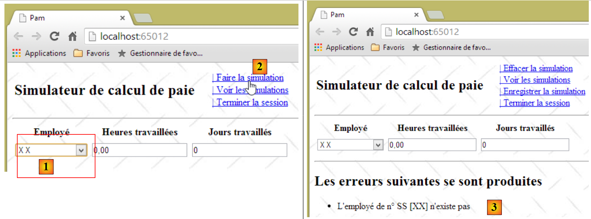 |
- en [1], seleccionamos al empleado que no existe;
- en [2], ejecutamos la simulación;
- en [3], recuperamos la nueva página de error.
Volvamos a la acción del servidor [RunSimulation]:
// make a simulation
[HttpPost]
public PartialViewResult FaireSimulation(ApplicationModel application, FormCollection data)
{
// action model creation
IndexModel modèle = new IndexModel() { Application = application};
// we try to retrieve the values posted in the model
TryUpdateModel(modèle, data);
// salary calculation
...
}
En la línea 8, actualizamos el modelo de la línea 6 con los valores enviados por la llamada Ajax. No validamos el modelo. Tenemos que hacerlo así porque no podemos saber de dónde proceden los valores enviados. Alguien podría haber manipulado una solicitud POST y habernos enviado datos no válidos.
Tarea: Siguiendo el patrón que desarrollamos para el caso de excepción, modifica la acción del servidor [FaireSimulation] para que devuelva una página de error cuando los datos enviados no sean válidos. Para ello, utilizaremos el método estático [GetErreursForModel] de la clase [Static].
¿Cómo se prueba este cambio? En la sección 9.11.3, te aseguraste de que la función JS [faireSimulation] no enviara los valores introducidos mediante POST si no eran válidos. Comenta las líneas que hacen esto y, a continuación, realiza la siguiente prueba:
 |
- en [1], ejecuta la simulación con valores no válidos;
- en [2], recuperamos con éxito la página de error que acabamos de crear, lo que demuestra que los validadores del lado del servidor funcionaron correctamente.
A continuación, recuerda descomentar las líneas que acabas de comentar en la función JS [faireSimulation].
9.13. Paso 7: Configuración de una sesión de usuario
La aplicación [Calculadora de nóminas] permite al usuario realizar diversas simulaciones de nóminas mediante el enlace [Ejecutar simulación], guardarlas mediante el enlace [Guardar simulación], verlas mediante el enlace [Ver simulaciones] y eliminarlas mediante el enlace [Eliminar simulación]. Sabemos que entre dos solicitudes sucesivas del usuario no hay ningún estado a menos que creemos uno mediante el mecanismo de sesión (véase la sección 4.10). Aquí queda bastante claro que debemos almacenar en la sesión la lista de simulaciones guardadas por el usuario a lo largo del tiempo. Hay otros datos que almacenar: cuando el usuario realiza una simulación, esta solo se guarda en la lista de simulaciones si el usuario lo solicita a través del enlace [Guardar simulación]. Cuando lo hace, debemos poder recuperar la simulación calculada en la solicitud anterior. Para ello, también se almacenará en la sesión. Por último, numeraremos las simulaciones empezando por 1. Para numerar correctamente una nueva simulación, debemos haber conservado el número de la simulación anterior, de nuevo en la sesión.
En la sección 4.10, introdujimos el concepto de un modelo de sesión como parámetro de entrada para una acción, de modo que la acción pueda acceder a la sesión. Volveremos sobre este concepto. Le recomendamos que vuelva a leer la sección correspondiente si este concepto no le queda claro.
Creamos la siguiente clase [SessionModel]:
 |
Su código es el siguiente:
using Pam.Web.Models;
using System.Collections.Generic;
namespace Pam.Web.Models
{
public class SessionModel
{
// list of simulations
public List<Simulation> Simulations { get; set; }
// n° of next simulation
public int NumNextSimulation { get; set; }
// the last simulation
public Simulation Simulation { get; set; }
// manufacturer
public SessionModel()
{
// empty simulation list
Simulations = new List<Simulation>();
// next simulation no
NumNextSimulation = 1;
}
}
}
La clase [Simulation] de las líneas 9 y 13 almacenará información sobre una simulación. ¿Qué necesitamos almacenar? El enlace [Run Simulation] calcula una hoja de nómina de tipo [Payroll]. Parece lógico incluir esto en la simulación. Además, necesitamos almacenar la información que dio lugar a esta hoja de nómina:
- el empleado seleccionado. Esto se puede encontrar en el campo [PayrollSheet.Employee]. Por lo tanto, no hay necesidad de almacenarlo por segunda vez;
- el número de horas y días trabajados. Esta información no se incluye en la clase [Nómina]. Por lo tanto, debemos almacenarla.
Por último, cada simulación se identifica mediante un número. Por lo tanto, podríamos empezar con la siguiente clase [Simulación]:
using Pam.Metier.Entites;
namespace Pam.Web.Models
{
public class Simulation
{
// simulation no
public int Num { get; set; }
// number of hours worked
public double HeuresTravaillées { get; set; }
// number of days worked
public int JoursTravaillés { get; set; }
// payslip
public FeuilleSalaire FeuilleSalaire { get; set; }
}
}
La acción del servidor [RunSimulation] debe, además de calcular una nómina, crear una simulación y colocarla en la sesión. Para ello, recibirá el modelo de sesión como parámetro:
// make a simulation
[HttpPost]
public PartialViewResult FaireSimulation(ApplicationModel application, SessionModel session, FormCollection data)
{
// action model creation
IndexModel modèle = new IndexModel() { Application = application };
// we try to retrieve the values posted in the model
TryUpdateModel(modèle, data);
// valid model?
if (!ModelState.IsValid)
{
// the error page is displayed
return PartialView("Erreurs", Static.GetErreursForModel(ModelState));
}
// salary calculation
FeuilleSalaire feuilleSalaire = null;
Exception exception = null;
try
{
// salary calculation
feuilleSalaire = application.PamMetier.GetSalaire(modèle.SS, modèle.HeuresTravaillées, (int)modèle.JoursTravaillés);
}
catch (Exception ex)
{
exception = ex;
}
// mistake?
if (exception != null)
{
// the error page is displayed
return PartialView("Erreurs", Static.GetErreursForException(exception));
}
// create a simulation and place it in the session
session.Simulation = ...
// the salary sheet is displayed
return PartialView("Simulation", feuilleSalaire);
}
- línea 3: la acción recibe el modelo de sesión como parámetro;
Tarea 1: Completa el código de la acción, línea 34
Tarea 2: Siguiendo el procedimiento de la sección 4.10, haz lo necesario para garantizar que el parámetro [SessionModel session] de la acción sea inicializado correctamente por el marco de trabajo. Si no se hace nada, este parámetro tendrá un puntero nulo.
9.14. Paso 8: Guardar una simulación
9.14.1. El problema
Cuando hayamos realizado una simulación, podemos guardarla:
 |

La vista parcial [Simulations.cshtml] muestra ahora la lista de simulaciones realizadas por el usuario. Tenga en cuenta que la nómina calculada es ficticia.
9.14.2. Escribir la acción del servidor [SaveSimulation]
El enlace Ajax [Guardar simulación] llama a la acción del servidor [SaveSimulation], cuyo código era anteriormente el siguiente:
[HttpPost]
public PartialViewResult EnregistrerSimulation()
{
return PartialView("Simulations");
}
Se desarrolla de la siguiente manera:
// save a simulation
[HttpPost]
public PartialViewResult EnregistrerSimulation(SessionModel session)
{
// save the last simulation run in the session's simulation list
...
// increment the number of the next simulation in the session
...
// the list of simulations is displayed
...
}
- Línea 1: La acción [SaveSimulation] necesita acceder a la sesión. Por eso toma el modelo de sesión como parámetro.
Tarea: Completa la acción de servidor [SaveSimulation].
9.14.3. Escribir la vista parcial [Simulations.cshtml]
La acción anterior [SaveSimulation] muestra la vista parcial [Simulations.cshtml] con la lista de simulaciones realizadas por el usuario como su modelo. Su código es el siguiente:
@model IEnumerable<Simulation>
@using Pam.Web.Models
@if (Model.Count() == 0)
{
<h2>Votre liste de simulations est vide</h2>
}
@if (Model.Count() != 0)
{
<h2>Liste des simulations</h2>
...
}
Tarea 1: Completa el código de la vista parcial [Simulations.cshtml]. Utiliza una tabla HTML para mostrar las simulaciones. Puedes consultar los ejemplos de la sección 5.4.
Nota: El enlace [eliminar] de cada simulación en la tabla HTML será un enlace JavaScript con el siguiente formato:
donde N es el número de simulación.
Tarea 2: Prueba tu aplicación ejecutando simulaciones. Para ello, repite la siguiente secuencia: 1) actualiza la página de la aplicación pulsando [F5], 2) ejecuta una simulación, 3) guárdala. Las simulaciones se acumularán en la sesión, lo que debería reflejarse en la vista [Simulations.cshtml].
Tarea 3: Mejora la vista parcial [Simulations.cshtml] para que los colores de las filas de la tabla HTML se alternen.

Asigna alternativamente las clases CSS [even] y [odd], definidas en la hoja de estilos [/Content/Site.css], a las filas <tr> de la tabla HTML:
.impair {
background-color: beige;
}
.pair {
background-color: lightsteelblue;
}
9.15. Paso 9: Volver al formulario de entrada
9.15.1. El problema
Una vez que hayamos obtenido la lista de simulaciones, podemos volver al formulario de entrada, algo que no hemos podido hacer desde hace un rato:


9.15.2. Escribir la acción del servidor [Form]
El enlace Ajax [Volver al formulario de simulación] llama a la acción del servidor [Form], cuyo código era anteriormente el siguiente:
[HttpPost]
public PartialViewResult Formulaire()
{
return PartialView("Formulaire");
}
La vista parcial [Form] que se muestra espera un [IndexModel] (línea 1 a continuación):
@model Pam.Web.Models.IndexModel
@using (Html.BeginForm("FaireSimulation", "Pam", FormMethod.Post, new { id = "formulaire" }))
{
...
}
<div id="simulation" />
Por eso el enlace [Volver al formulario de simulación] ya no funcionaba.
Tarea: Escribe la nueva versión de la acción de servidor [Formulario] (hay que reescribir 2 líneas) y, a continuación, ejecuta las pruebas.
9.15.3. Modificación de la función JavaScript [returnToForm]
Con el cambio realizado anteriormente, ahora podemos volver al formulario, pero entonces surge un problema:
 |
- En [1], volvemos al formulario de entrada;
- en [2], realizamos una simulación con entradas incorrectas. Entonces descubrimos que los validadores del lado del cliente ya no funcionan. En este caso, se llamó al servidor y este devolvió una página de error gracias al trabajo realizado en la sección 9.12.4.
Este problema se identificó y se abordó en la sección 7.6.7.
Tarea: Siguiendo el procedimiento de la sección 7.6.7, corrija la función JavaScript [returnToForm] y, a continuación, ejecute pruebas para verificar que los validadores del lado del cliente vuelven a funcionar.
9.16. Paso 10: Consulte la lista de simulaciones
9.16.1. El problema
Al trabajar con el formulario de simulación, puede ver la lista de simulaciones que ha realizado:


9.16.2. Escribir la acción del servidor [ViewSimulations]
El enlace Ajax [Ver simulaciones] llama a la acción del servidor [ViewSimulations], cuyo código era anteriormente el siguiente:
// see simulations
[HttpPost]
public PartialViewResult VoirSimulations()
{
return PartialView("Simulations");
}
La vista parcial [Simulations] que muestra espera un modelo [IEnumerable<Simulation>] (línea 1 a continuación):
@model IEnumerable<Simulation>
@using Pam.Web.Models
@if (Model.Count() == 0)
{
<h2>Votre liste de simulations est vide</h2>
}
@if (Model.Count() != 0)
{
<h2>Liste des simulations</h2>
...
}
Por eso el enlace [Ver simulaciones] ya no funcionaba.
Tarea: Escribe la nueva versión de la acción del servidor [ViewSimulations] (2 líneas que reescribir) y, a continuación, ejecuta las pruebas.
9.17. Paso 11: Finalizar la sesión
9.17.1. El problema
Puedes finalizar la sesión del usuario en cualquier momento utilizando el enlace [Ajax] [Finalizar sesión]. Esto finaliza la sesión actual e inicia una nueva. Además, vuelves a la vista del formulario:
 |
 |
- en [1], ejecutamos dos simulaciones y luego finalizamos la sesión;
- en [2], volvimos al formulario de entrada. Queremos ver las simulaciones;
- en [3], debido al cambio de sesión, la lista de simulaciones está ahora vacía.
9.17.2. Escribir la acción del servidor [EndSession]
El enlace Ajax [End Session] llama a la acción del servidor [EndSession], cuyo código era anteriormente el siguiente:
// end session
[HttpPost]
public PartialViewResult TerminerSession()
{
return PartialView("Formulaire");
}
La vista parcial [Form] que muestra espera un [IndexModel] (línea 1 a continuación):
@model Pam.Web.Models.IndexModel
@using (Html.BeginForm("FaireSimulation", "Pam", FormMethod.Post, new { id = "formulaire" }))
{
...
}
<div id="simulation" />
Por eso el enlace [Finalizar sesión] ya no funcionaba.
Tarea: Escribe la nueva versión de la acción del servidor [EndSession] (2 líneas que reescribir) y, a continuación, ejecuta las pruebas.
Nota: Para finalizar la sesión en la acción, escribe:
9.17.3. Modificación de la función JavaScript [terminerSession]
Con la modificación realizada anteriormente, ahora podemos volver al formulario, pero entonces aparece una anomalía: la descrita anteriormente en la sección 9.15.3.
Tarea: Siguiendo el procedimiento utilizado en la sección 9.15.3, corrija la función JavaScript [terminerSession] y, a continuación, realice pruebas para verificar que los validadores del lado del cliente vuelven a funcionar.
9.18. Paso 12: Borrar la simulación
9.18.1. El problema
Cuando se ha creado una simulación, se puede borrar utilizando el enlace de JavaScript [Clear Simulation]:


9.18.2. Escribir la acción del lado del cliente [clearSimulation]
La función JavaScript [clearSimulation] tiene actualmente el siguiente código:
function effacerSimulation() {
// delete form entries
// ...
// hide the simulation if it exists
$("#simulation").hide();
// menu
setMenu([lnkFaireSimulation, lnkTerminerSession, lnkVoirSimulations]);
}
Tarea: Completa este código. Puedes utilizar el ejemplo de la sección 7.6.6 como guía
9.19. Paso 13: Eliminar una simulación
9.19.1. El problema
En la página de simulaciones, puedes eliminar determinadas simulaciones utilizando el enlace JavaScript [eliminar]:


9.19.2. Escribir la acción del cliente [removeSimulation]
Los enlaces [remove] tienen el siguiente formato HTML:
donde N es el número de simulación.
Tarea: Siguiendo el procedimiento descrito en las secciones 9.9.3, escribe la función JS [removeSimulation]. Esta función enviará una solicitud Ajax de tipo POST a la acción [/Pam/RemoveSimulation]. Enviará el dato N en el formato num=N.
Nota: La función JS [retirerSimulation] es similar a las otras funciones JS que has escrito y que realizan una llamada Ajax al servidor. La única diferencia aquí es el envío POST de un valor que no se encuentra en un formulario. Sabemos que los valores enviados se combinan en una cadena con el siguiente formato:
Por lo tanto, la función JS [removeSimulation] tendrá la siguiente forma:
function retirerSimulation(N) {
// make a manual Ajax call
$.ajax({
url: '/Pam/RetirerSimulation',
...
data:"num="+N,
...
});
// menu
setMenu([lnkRetourFormulaire, lnkTerminerSession]);
}
- Línea 6: La propiedad [data] de una llamada jQuery Ajax representa la cadena enviada al servidor.
9.19.3. Escribir la acción del servidor [RemoveSimulation]
La acción del servidor [RemoveSimulation]:
- recibe un parámetro enviado llamado [num], que es el número de una simulación;
- debe eliminar la simulación con ese número de la lista de simulaciones almacenadas en la sesión;
- debe mostrar a continuación la nueva lista de simulaciones.
Tarea: Escribe la acción del servidor [RemoveSimulation]. Consulta la sección 4.1 para aprender a recuperar el parámetro enviado denominado [num].
9.20. Paso 14: Mejorar el método de inicialización de la aplicación
Nuestra aplicación web está completa. Funciona con una clase [business] simulada. Repasemos la arquitectura que hemos desarrollado:
 |
Quedan algunos detalles por resolver antes de pasar a la implementación real de la capa [business], y esto tiene lugar en el método de inicialización de la aplicación: el método [Application_Start] en [Global.asax]:
 |
El método [Application_Start] en [Global.asax] se ejecuta solo una vez, al iniciarse la aplicación. Aquí es donde se puede utilizar el archivo de configuración [Web.config]. Por ahora, nuestro método [Application_Start] tiene este aspecto:
// application
protected void Application_Start()
{
// ----------Auto-generated
AreaRegistration.RegisterAllAreas();
WebApiConfig.Register(GlobalConfiguration.Configuration);
FilterConfig.RegisterGlobalFilters(GlobalFilters.Filters);
RouteConfig.RegisterRoutes(RouteTable.Routes);
BundleConfig.RegisterBundles(BundleTable.Bundles);
// -------------------------------------------------------------------
// ---------- specific configuration
// -------------------------------------------------------------------
// application scope data
ApplicationModel application = new ApplicationModel();
Application["data"] = application;
// instantiation layer [business]
application.PamMetier = new PamMetier();
...
// model binders
...
}
En la línea 17, se instancia la capa de negocio utilizando el operador new. Además, el modelo de la aplicación se define de la siguiente manera:
public class ApplicationModel
{
// --- application scope data ---
public Employe[] Employes { get; set; }
public IPamMetier PamMetier { get; set; }
public SelectListItem[] EmployesItems { get; set; }
}
En la línea 5 anterior, vemos que el tipo de la propiedad [PamMetier] es el de la interfaz [IPamMetier]. Esto significa que esta propiedad puede ser inicializada por cualquier objeto que implemente esta interfaz. Sin embargo, en la línea 17 de [Application_Start], hemos codificado de forma rígida el nombre de una clase que implementa [IPamMetier]. Por lo tanto, si la capa [business] se implementara con una nueva clase que implementara [IPamMetier], habría que cambiar esta línea. No es un problema grave, pero se puede evitar. La definición de la clase que implementa la interfaz [IPamMetier] se puede trasladar a un archivo de configuración. Para cambiar la implementación, modificamos el contenido de este archivo de configuración. No es necesario cambiar el código .NET.
Aquí utilizaremos el contenedor de inyección de dependencias [Spring.net]. Existen otros marcos de trabajo de .NET que pueden hacer lo mismo, quizá mejor y de forma más sencilla.
La arquitectura del proyecto evoluciona de la siguiente manera:
 |
- en [A], el método de inicialización de la capa [ASP.NET MVC] solicitará una referencia a la capa [business] simulada a [Spring.net];
- en [B], [Spring.net] creará la capa [de negocio] simulada utilizando su archivo de configuración para determinar qué clase instanciar;
- en [C], [Spring.net] devolverá la referencia a la capa [de negocio] simulada a la capa [ASP.NET MVC].
Tenga en cuenta que, por defecto, los objetos gestionados por [Spring.net] son singletons: solo hay una instancia de cada uno. Por lo tanto, si más adelante en nuestro ejemplo el código solicita de nuevo una referencia a la capa [business] simulada a [Spring.net], [Spring.net] simplemente devuelve la referencia al objeto creado inicialmente.
9.20.1. Añadir referencias a [Spring] al proyecto web
Utilizaremos [Spring.net]. Este marco de trabajo se presenta en forma de un archivo DLL que debe añadirse a las referencias del proyecto. A continuación se explica cómo hacerlo:
 |
En [1], haz clic con el botón derecho del ratón en la rama [Referencias] del proyecto y selecciona la opción [Administrar paquetes NuGet]. Se requiere conexión a Internet. A continuación, proceda como se hizo anteriormente con la biblioteca JQuery [Globalize]. Busque la palabra clave [Spring.core] e instale este paquete. La instalación incluye dos DLL: [Spring.core] [2] y [Common.Logging] [3]. En los siguientes ejemplos se ha utilizado la versión 1.3.2 de Spring.
Nota: Si no dispone de conexión a Internet, encontrará estos archivos DLL en la carpeta [lib] de los materiales de este caso práctico.
9.20.2. Configuración de [web.config]
La definición de la clase de implementación para la interfaz [IPamMetier] se encuentra en el archivo [web.config].
<configuration>
<configSections>
...
<sectionGroup name="spring">
<section name="objects" type="Spring.Context.Support.DefaultSectionHandler, Spring.Core" />
<section name="context" type="Spring.Context.Support.ContextHandler, Spring.Core" />
</sectionGroup>
</configSections>
<!-- spring configuration -->
<spring>
<context>
<resource uri="config://spring/objects" />
</context>
<objects xmlns="http://www.springframework.net">
<object id="pammetier" type="Pam.Metier.Service.PamMetier, pam-metier-simule"/>
</objects>
</spring>
...
- líneas 2–8: localice la etiqueta <configSections> en el archivo e inserte las líneas 4–7 dentro de ella;
- línea 4: el atributo [name="spring"] proporciona información sobre la sección [spring] de las líneas 10-17;
- línea 5: define la clase [Spring.Context.Support.DefaultSectionHandler], ubicada en el archivo DLL [Spring.Core], como la encargada de gestionar la sección [objects] de las líneas 14–16;
- línea 6: define la clase [Spring.Context.Support.ContextHandler], ubicada en el archivo DLL [Spring.Core], como la encargada de procesar la sección [context] de las líneas 11 a 13;
- líneas 11-13: esta sección proporciona la información [<resource uri="config://spring/objects" />], que indica que los objetos Spring se encuentran en el archivo de configuración dentro de la sección [/spring/objects], es decir, en las líneas 14-16;
- líneas 14-16: la etiqueta [objects] introduce los objetos Spring;
- línea 15: define un objeto identificado por [id="pammetier"], que es una instancia de la clase [Pam.Metier.Service.PamMetier] ubicada en la DLL [pam-metier-simule]. Ten cuidado de no cometer ningún error aquí. Para el atributo [id], puedes utilizar lo que quieras. Utilizarás este identificador en [Global.asax]. La clase [Pam.Metier.Service.PamMetier] es la de nuestra capa [business] simulada. Debes volver a su definición para encontrar su nombre completo:
namespace Pam.Metier.Service
{
public class PamMetier : IPamMetier
{
...
Para el archivo DLL [pam-metier-simule], debe comprobar las propiedades del proyecto C# [pam-metier-simule]:
 |
Debe utilizar el nombre indicado en [1].
9.20.3. Modificación de [Application_Start]
El método [Application_Start] cambia de la siguiente manera:
using Spring.Context.Support;
// application
protected void Application_Start()
{
// ----------Auto-generated
AreaRegistration.RegisterAllAreas();
WebApiConfig.Register(GlobalConfiguration.Configuration);
FilterConfig.RegisterGlobalFilters(GlobalFilters.Filters);
RouteConfig.RegisterRoutes(RouteTable.Routes);
BundleConfig.RegisterBundles(BundleTable.Bundles);
// -------------------------------------------------------------------
// ---------- specific configuration
// -------------------------------------------------------------------
// application scope data
ApplicationModel application = new ApplicationModel();
Application["data"] = application;
// instantiation layer [business]
application.PamMetier = ContextRegistry.GetContext().GetObject("pammetier") as IPamMetier;
...
// model binders
...
}
- Línea 19: Utilizamos la clase de Spring [ContextRegistry], que es capaz de procesar el archivo [web.config]. Para ello, necesitamos importar el espacio de nombres de la línea 1. El método estático [GetContext] recupera el contenido de las etiquetas [context], que indican dónde se encuentran los objetos de Spring. A continuación, el método estático [GetObject] nos permite recuperar un objeto específico identificado por su atributo id. Tenga en cuenta que el nombre de la clase que implementa la interfaz [IPamMetier] ya no está codificado de forma fija en el código. Ahora se encuentra en el archivo [web.config].
Después de realizar todos estos cambios, prueba tu aplicación. Debería funcionar.
9.20.4. Gestión de un error de inicialización de la aplicación
En el método [Application_Start], escribimos:
application.PamMetier = ContextRegistry.GetContext().GetObject("pammetier") as IPamMetier;
La instrucción a la derecha del signo = puede fallar. Hay varias razones para ello:
- la más obvia es que hayamos cometido un error en el nombre del objeto que se va a instanciar;
- otra es que falle la instanciación de la capa [de negocio]. Esto no puede ocurrir en nuestra capa [de negocio] simulada, pero sí podría ocurrir en nuestra capa [de negocio] real, que estará conectada a una base de datos. Es posible que el SGBD no esté en ejecución, que la información sobre la base de datos que se va a gestionar sea incorrecta, etc...
Gestionaremos cualquier excepción en un bloque try/catch. El código evoluciona de la siguiente manera:
// application
protected void Application_Start()
{
// ----------Auto-generated
...
// -------------------------------------------------------------------
// ---------- specific configuration
// -------------------------------------------------------------------
// application scope data
ApplicationModel application = new ApplicationModel();
Application["data"] = application;
application.InitException = null;
try
{
// instantiation layer [business]
application.PamMetier = ContextRegistry.GetContext().GetObject("pammetier") as IPamMetier;
}
catch (Exception ex)
{
application.InitException = ex;
}
//if no error
if (application.InitException == null)
{
....
}
// model binders
...
}
- En la línea 12, introducimos una nueva propiedad denominada [InitException] en el modelo de la aplicación:
public class ApplicationModel
{
// --- application scope data ---
public Employe[] Employes { get; set; }
public IPamMetier PamMetier { get; set; }
public SelectListItem[] EmployesItems { get; set; }
public Exception InitException { get; set; }
}
- línea 7 anterior, la excepción que puede producirse durante la inicialización de la aplicación;
- líneas 13-21 de [Application_Start]: la instanciación de la capa [business] ahora tiene lugar dentro de un bloque try/catch;
- línea 20: se captura la excepción;
- líneas 23-26: si no se ha producido ningún error, se ejecuta el código anterior;
- línea 28: se crean los [ModelBinders] independientemente de si se ha producido un error o no. Esto es importante. Queremos asegurarnos de que el marco de trabajo vincule correctamente el modelo de la aplicación [ApplicationModel].
Sabemos que, cuando se inicia la aplicación, se ejecuta la acción del servidor [Index]. Por ahora, es la siguiente:
[HttpGet]
public ViewResult Index(ApplicationModel application)
{
return View(new IndexModel() { Application = application });
}
Línea 2: La acción [Index] recibe el modelo de aplicación. Por lo tanto, puede determinar si la inicialización se ha realizado correctamente o no y mostrar una página de error si la inicialización ha fallado de alguna manera. Modificamos el código de la siguiente manera:
[HttpGet]
public ViewResult Index(ApplicationModel application)
{
// initialization error?
if (application.InitException != null)
{
// error page without menu
return View("InitFailed",Static.GetErreursForException(application.InitException));
}
// no error
return View(new IndexModel() { Application = application });
}
Línea 8: En caso de error de inicialización, mostramos la vista [InitFailed.cshtml], utilizando como modelo la lista de mensajes de error de la excepción que se produjo durante la inicialización. El método [Static.GetErrorsForException] se presentó y explicó en la sección 9.12.4. La vista [InitFailed.cshtml] tendrá el siguiente aspecto:
 |
Su código es el siguiente:
@model IEnumerable<string>
@{
Layout = null;
}
<!DOCTYPE html>
<html>
<head>
<title>@ViewBag.Title</title>
<meta charset="utf-8" />
<meta name="viewport" content="width=device-width" />
<link rel="stylesheet" href="~/Content/Site.css" />
</head>
<body>
<table>
<tbody>
<tr>
<td>
<h2>Simulateur de calcul de paie</h2>
</td>
</tbody>
</table>
<hr />
<h2>Les erreurs suivantes se sont produites à l'initialisation de l'application : </h2>
<ul>
@foreach (string msg in Model)
{
<li>@msg</li>
}
</ul>
</body>
</html>
- línea 1: la plantilla de vista es una lista de mensajes de error. Estos se muestran en una lista HTML en las líneas 24–29;
- línea 3: esta vista no utiliza la página maestra [_Layout.cshtml]. Esto se debe a que no queremos el menú que proporciona ese documento. Por lo tanto, creamos una página HTML completa (líneas 5–23).
Para probar esto, basta con modificar la instanciación de la capa [business] en [Application_Start] de la siguiente manera:
try
{
// instantiation layer [business]
application.PamMetier = ContextRegistry.GetContext().GetObject("xx") as IPamMetier;
}
catch (Exception ex)
{
application.InitException = ex;
}
Línea 4: Estamos buscando un objeto que no existe entre los objetos de Spring.
Cuando guardamos estos cambios y ejecutamos la aplicación, obtenemos la siguiente página:

Aparece una página de error sin menú. El usuario no puede hacer nada más que aceptar el error. Esto es lo que queríamos.
9.21. ¿En qué punto nos encontramos ahora?
Ahora tenemos una aplicación web funcional que opera con una capa de negocio simulada. Su arquitectura es la siguiente:
 |
La capa [ASP.NET MVC] funciona con la capa de negocio simulada a través de la interfaz [IPamMetier]. Si sustituimos esta capa de negocio simulada por una capa de negocio real que implemente esta interfaz, no tendremos que modificar el código de la capa web. Gracias a [Spring.net], solo tendremos que cambiar la clase de implementación de la interfaz [IPamMetier] en [web.config]. Seguiremos adelante con este enfoque.
La nueva arquitectura será la siguiente:
 |
Describiremos lo siguiente por orden:
- la capa [EF5] conectada al SGBD. Se implementará utilizando Entity Framework 5 (EF5);
- la capa [DAO], que gestiona el acceso a los datos a través de la capa [EF5]. Esto le permite ser independiente del SGBD. Esta capa simplemente manipula las entidades de la aplicación [Empleado, Cotizaciones, Complementos];
- la capa [business] que implementa el cálculo de los salarios.
La nueva arquitectura es la que se presenta al principio de este documento, en la sección 1.1, y que ahora resumimos:
 |
- la capa [Web] es la capa que está en contacto con el usuario de la aplicación web. El usuario interactúa con la aplicación web a través de páginas web visualizadas en un navegador. ASP.NET MVC reside en esta capa y solo en esta capa;
- la capa [de negocio] implementa las reglas de negocio de la aplicación, como el cálculo de un salario o una factura. Esta capa utiliza datos del usuario a través de la capa [Web] y del SGBD a través de la capa [DAO];
- La capa [DAO] (objetos de acceso a datos), la capa [ORM] (mapeador relacional de objetos) y el conector ADO.NET gestionan el acceso a los datos del SGBD. La capa [ORM] actúa como puente entre los objetos gestionados por la capa [DAO] y las filas y columnas de datos de una base de datos relacional. En el mundo .NET se utilizan habitualmente dos ORM: NHibernate (http://sourceforge.net/projects/nhibernate/) y Entity Framework (http://msdn.microsoft.com/en-us/data/ef.aspx);
- La integración de las capas se puede lograr utilizando un contenedor de inyección de dependencias como Spring (http://www.springframework.net/);
Las capas [business], [DAO] y [EF5] se implementarán mediante proyectos C#. A partir de ahora, trabajaremos con Visual Studio Express 2012 para escritorio.
9.22. Paso 15: Configuración de la capa Entity Framework 5
 |
La creación de la capa [EF5] tiene menos que ver con la programación y más con la configuración. Para comprender cómo escribir esta capa, lea el documento [Introducción a Entity Framework 5 Code First], disponible en la URL [http://tahe.developpez.com/dotnet/ef5cf-02/]. Se trata de un documento bastante extenso. Los fundamentos se tratan en los cuatro primeros capítulos. Se indicarán las secciones específicas que debe leer. Cuando hagamos referencia a este documento, utilizaremos la notación [refEF5].
Además, en ocasiones necesitaremos conceptos de C#. En esos casos, haremos referencia al curso [Introducción al lenguaje C#], disponible en la URL [http://tahe.developpez.com/dotnet/csharp/], utilizando la notación [refC#].
9.22.1. La base de datos
La base de datos de la aplicación se presentó en la sección 9.4. Se trata de una base de datos MySQL denominada [dbpam_ef5] (pam = Paie Assistante Maternelle). Esta base de datos tiene un administrador llamado root sin contraseña.
Repasemos el esquema de la base de datos. Tiene tres tablas:
Existe una relación de clave externa entre la columna EMPLOYEES(INDEMNITY_ID) y la columna INDEMNITIES(ID). Parte de la estructura de esta base de datos viene dictada por su uso con EF5.
El script SQL para crear la base de datos es el siguiente:
-- phpMyAdmin SQL Dump
-- version 3.5.1
-- http://www.phpmyadmin.net
--
-- Customer: localhost
-- Generated on: Mon November 04, 2013 at 09:34 am
-- Server version: 5.5.24-log
-- Version of PHP: 5.4.3
SET SQL_MODE="NO_AUTO_VALUE_ON_ZERO";
SET time_zone = "+00:00";
/*!40101 SET @OLD_CHARACTER_SET_CLIENT=@@CHARACTER_SET_CLIENT */;
/*!40101 SET @OLD_CHARACTER_SET_RESULTS=@@CHARACTER_SET_RESULTS */;
/*!40101 SET @OLD_COLLATION_CONNECTION=@@COLLATION_CONNECTION */;
/*!40101 SET NAMES utf8 */;
--
-- Database: `dbpam_ef5`
--
-- --------------------------------------------------------
--
-- Structure of the `contributions` table
--
CREATE TABLE IF NOT EXISTS `cotisations` (
`ID` bigint(20) NOT NULL AUTO_INCREMENT,
`SECU` double NOT NULL,
`RETRAITE` double NOT NULL,
`CSGD` double NOT NULL,
`CSGRDS` double NOT NULL,
`VERSIONING` int(11) NOT NULL,
PRIMARY KEY (`ID`)
) ENGINE=InnoDB DEFAULT CHARSET=utf8 AUTO_INCREMENT=12 ;
--
-- Contents of the `contributions` table
--
INSERT INTO `cotisations` (`ID`, `SECU`, `RETRAITE`, `CSGD`, `CSGRDS`, `VERSIONING`) VALUES
(11, 9.39, 7.88, 6.15, 3.49, 1);
--
-- Contribution triggers
--
DROP TRIGGER IF EXISTS `INCR_VERSIONING_COTISATIONS`;
DELIMITER //
CREATE TRIGGER `INCR_VERSIONING_COTISATIONS` BEFORE UPDATE ON `cotisations`
FOR EACH ROW BEGIN
SET NEW.VERSIONING:=OLD.VERSIONING+1;
END
//
DELIMITER ;
DROP TRIGGER IF EXISTS `START_VERSIONING_COTISATIONS`;
DELIMITER //
CREATE TRIGGER `START_VERSIONING_COTISATIONS` BEFORE INSERT ON `cotisations`
FOR EACH ROW BEGIN
SET NEW.VERSIONING:=1;
END
//
DELIMITER ;
-- --------------------------------------------------------
--
-- Structure of the `employees` table
--
CREATE TABLE IF NOT EXISTS `employes` (
`ID` bigint(20) NOT NULL AUTO_INCREMENT,
`PRENOM` varchar(20) CHARACTER SET latin1 NOT NULL,
`SS` varchar(15) CHARACTER SET latin1 NOT NULL,
`ADRESSE` varchar(50) CHARACTER SET latin1 NOT NULL,
`CP` varchar(5) CHARACTER SET latin1 NOT NULL,
`VILLE` varchar(30) CHARACTER SET latin1 NOT NULL,
`NOM` varchar(30) CHARACTER SET latin1 NOT NULL,
`VERSIONING` int(11) NOT NULL,
`INDEMNITE_ID` bigint(20) NOT NULL,
PRIMARY KEY (`ID`),
UNIQUE KEY `SS` (`SS`),
KEY `FK_EMPLOYES_INDEMNITE_ID` (`INDEMNITE_ID`)
) ENGINE=InnoDB DEFAULT CHARSET=utf8 AUTO_INCREMENT=26 ;
--
-- Contents of the `employees` table
--
INSERT INTO `employes` (`ID`, `PRENOM`, `SS`, `ADRESSE`, `CP`, `VILLE`, `NOM`, `VERSIONING`, `INDEMNITE_ID`) VALUES
(24, 'Marie', '254104940426058', '5 rue des oiseaux', '49203', 'St Corentin', 'Jouveinal', 1, 93),
(25, 'Justine', '260124402111742', 'La Brûlerie', '49014', 'St Marcel', 'Laverti', 1, 94);
--
-- Used' triggers
--
DROP TRIGGER IF EXISTS `INCR_VERSIONING_EMPLOYES`;
DELIMITER //
CREATE TRIGGER `INCR_VERSIONING_EMPLOYES` BEFORE UPDATE ON `employes`
FOR EACH ROW BEGIN
SET NEW.VERSIONING:=OLD.VERSIONING+1;
END
//
DELIMITER ;
DROP TRIGGER IF EXISTS `START_VERSIONING_EMPLOYES`;
DELIMITER //
CREATE TRIGGER `START_VERSIONING_EMPLOYES` BEFORE INSERT ON `employes`
FOR EACH ROW BEGIN
SET NEW.VERSIONING:=1;
END
//
DELIMITER ;
-- --------------------------------------------------------
--
-- Structure of the `indemnities` table
--
CREATE TABLE IF NOT EXISTS `indemnites` (
`ID` bigint(20) NOT NULL AUTO_INCREMENT,
`ENTRETIEN_JOUR` double NOT NULL,
`REPAS_JOUR` double NOT NULL,
`INDICE` int(11) NOT NULL,
`INDEMNITES_CP` double NOT NULL,
`BASE_HEURE` double NOT NULL,
`VERSIONING` int(11) NOT NULL,
PRIMARY KEY (`ID`),
UNIQUE KEY `INDICE` (`INDICE`)
) ENGINE=InnoDB DEFAULT CHARSET=utf8 AUTO_INCREMENT=95 ;
--
-- Contents of the `indemnities` table
--
INSERT INTO `indemnites` (`ID`, `ENTRETIEN_JOUR`, `REPAS_JOUR`, `INDICE`, `INDEMNITES_CP`, `BASE_HEURE`, `VERSIONING`) VALUES
(93, 2.1, 3.1, 2, 15, 2.1, 1),
(94, 2, 3, 1, 12, 1.93, 1);
--
-- Compensation triggers
--
DROP TRIGGER IF EXISTS `INCR_VERSIONING_INDEMNITES`;
DELIMITER //
CREATE TRIGGER `INCR_VERSIONING_INDEMNITES` BEFORE UPDATE ON `indemnites`
FOR EACH ROW BEGIN
SET NEW.VERSIONING:=OLD.VERSIONING+1;
END
//
DELIMITER ;
DROP TRIGGER IF EXISTS `START_VERSIONING_INDEMNITES`;
DELIMITER //
CREATE TRIGGER `START_VERSIONING_INDEMNITES` BEFORE INSERT ON `indemnites`
FOR EACH ROW BEGIN
SET NEW.VERSIONING:=1;
END
//
DELIMITER ;
--
-- Constraints for exported tables
--
--
-- Constraints for the `employees` table
--
ALTER TABLE `employes`
ADD CONSTRAINT `FK_EMPLOYES_INDEMNITE_ID` FOREIGN KEY (`INDEMNITE_ID`) REFERENCES `indemnites` (`ID`);
/*!40101 SET CHARACTER_SET_CLIENT=@OLD_CHARACTER_SET_CLIENT */;
/*!40101 SET CHARACTER_SET_RESULTS=@OLD_CHARACTER_SET_RESULTS */;
/*!40101 SET COLLATION_CONNECTION=@OLD_COLLATION_CONNECTION */;
Tenga en cuenta los siguientes puntos:
- líneas 30, 73, 122: las claves primarias de las tablas están en modo [AUTO_INCREMENT]. Estas son gestionadas por MySQL, no por EF5;
- línea 83: el número de la Seguridad Social tiene una restricción de unicidad;
- línea 130: el ID de empleado tiene una restricción de unicidad;
- líneas 168-169: la clave externa de la tabla [employees] a la tabla [benefits];
- línea 49: un disparador es un script SQL incrustado por el SGBD que se ejecuta en momentos específicos;
- líneas 51–54: el disparador [INCR_VERSIONING_COTISATIONS] se activa antes de cualquier modificación de una fila en la tabla [cotisations]. A continuación, incrementa la columna [VERSIONING] en uno;
- Líneas 59–62: El disparador [START_VERSIONING_COTISATIONS] se activa antes de que se inserte cualquier nueva fila en la tabla [cotisations]. A continuación, inicializa la columna [VERSIONING] a 1;
- En definitiva, la columna [VERSIONING] se establece en 1 cuando se crea una fila en la tabla [contributions] y, a continuación, se incrementa en 1 cada vez que se realiza una modificación en dicha fila. Este mecanismo permite a EF5 gestionar el acceso simultáneo a una fila de la tabla [contributions] de la siguiente manera:
- Un proceso P1 lee una fila L de la tabla [contributions] en el momento T1. La fila tiene un valor de la columna [VERSIONING] de V1;
- un proceso P2 lee la misma fila L de la tabla [contributions] en el momento T2. La fila tiene un valor de la columna [VERSIONING] de V1 porque el proceso P1 aún no ha confirmado su modificación;
- El proceso P1 modifica la fila L y confirma su cambio. La columna [VERSIONING] de la fila L cambia entonces a V1+1 debido al disparador [INCR_VERSIONING_COTISATIONS];
- A continuación, el proceso P2 hace lo mismo. EF5 lanza entonces una excepción porque el proceso P2 tiene una fila con una columna [VERSIONING] que tiene un valor de V1, lo cual difiere del valor encontrado en la base de datos, que es V1+1. Una fila solo puede modificarse si tiene el mismo valor [VERSIONING] que en la base de datos.
Esto se denomina control de concurrencia optimista. Con EF5, un campo que desempeñe esta función debe tener la anotación [ConcurrencyCheck].
- Se crea un mecanismo similar para la tabla [employes] (líneas 98–113) y la tabla [indemnites] (líneas 144–159).
Tarea: Crea la base de datos MySQL [dbpam_ef5] utilizando el script SQL anterior. La base de datos [dbpam_ef5] debe crearse previamente, ya que el script no la crea. A continuación, ejecutaremos el script SQL en esta base de datos.
9.22.2. El proyecto de Visual Studio
Utilizando Visual Studio Express 2012 for Desktop, cargamos la solución [pam-td] utilizada al compilar la capa [web]:
 |
- en [1], VS 2012 Express for Desktop no puede cargar el proyecto web [pam-web-01]. Esto es normal y no supone ningún problema;
- en [2], añadimos un nuevo proyecto a la solución [pam-td];
 |
- en [3], el proyecto es de tipo [console] y se llama [4] [pam-ef5];
- en [5], se crea el proyecto. Su nombre no aparece en negrita, por lo que no es el proyecto de inicio de la solución;
 |
- En [6] y [7], establecemos el nuevo proyecto como proyecto de inicio.
9.22.3. Añadir las referencias necesarias al proyecto
Analicemos el proyecto en su conjunto:
 |
Nuestro proyecto requiere varias DLL:
- la DLL de Entity Framework 5;
- la DLL del conector ADO.NET para el SGBD MySQL.
La sección 4.2 de [refEF5] explica cómo instalar estos archivos DLL utilizando la herramienta [NuGet]. Actualmente (noviembre de 2013), la versión disponible de Entity Framework es la versión 6 (EF6). Lamentablemente, parece que el conector ADO.NET para MySQL disponible (noviembre de 2013) a través de [NuGet] no es compatible con EF6. Por lo tanto, hemos colocado el archivo DLL de EF5 y los demás archivos DLL necesarios para el proyecto [pam-ef5] en una carpeta [lib] [1]
 |
Hemos colocado otras DLL en la carpeta [lib]. Las utilizaremos más adelante. En [2], añadimos estas nuevas DLL al proyecto.
 |
- En [3], navega por el sistema de archivos hasta la carpeta [lib];
- En [4], selecciona los tres archivos DLL y, a continuación, haz clic en Aceptar dos veces;
- En [5], las tres DLL se han añadido a las referencias del proyecto.
Necesitamos otra DLL. Esta se encuentra entre las que hay en el .NET Framework del equipo.
 |
- En [1], añade una nueva referencia al proyecto;
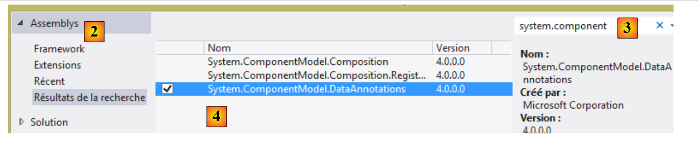 |
- En [2], seleccione [Ensamblados];
- En [3], escribe [system.component];
- En [4], seleccione el ensamblado [System.ComponentModel.DataAnnotations];
- En [5], se ha añadido la referencia.
Ya estamos listos para programar y configurar.
9.22.4. Entidades de Entity Framework
Las entidades de Entity Framework son clases que encapsulan las filas de las distintas tablas de la base de datos. Repasémoslas:
En la capa [web], utilizamos las entidades [Employee, Contributions, Benefits] (véase la sección 9.7.3, página 211). No eran representaciones exactas de las tablas. Por lo tanto, se ignoraron las columnas [ID, VERSIONING]. Aquí no será así, ya que el ORM de EF5 las utiliza. Por lo tanto, les añadiremos las propiedades que faltan. Creamos estas entidades en una carpeta [Models] dentro del proyecto:
 |
Su nuevo código es ahora el siguiente:
Clase [Cotizaciones]
using System;
namespace Pam.EF5.Entites
{
public class Cotisations
{
public int Id { get; set; }
public double CsgRds { get; set; }
public double Csgd { get; set; }
public double Secu { get; set; }
public double Retraite { get; set; }
public int Versioning { get; set; }
// signature
public override string ToString()
{
return string.Format("Cotisations[{0},{1},{2},{3}, {4}, {5}]", Id, Versioning, CsgRds, Csgd, Secu, Retraite);
}
}
}
- línea 3: el espacio de nombres se ha adaptado al nuevo proyecto;
- se han añadido las propiedades de las líneas 7 y 12 para reflejar la estructura de la tabla [contributions];
- línea 17: el método [ToString] ahora muestra los dos nuevos campos.
Clase [Indemnites]
using System;
namespace Pam.EF5.Entites
{
public class Indemnites
{
public int Id { get; set; }
public int Indice { get; set; }
public double BaseHeure { get; set; }
public double EntretienJour { get; set; }
public double RepasJour { get; set; }
public double IndemnitesCp { get; set; }
public int Versioning { get; set; }
// signature
public override string ToString()
{
return string.Format("Indemnités[{0},{1},{2},{3},{4}, {5}, {6}]", Id, Versioning, Indice, BaseHeure, EntretienJour, RepasJour, IndemnitesCp);
}
}
}
- línea 3: el espacio de nombres se ha adaptado al nuevo proyecto;
- se han añadido las propiedades de las líneas 7 y 13 para reflejar la estructura de la tabla [indemnites];
- línea 18: el método [ToString] ahora muestra los dos nuevos campos.
Clase [Employee]
using System;
namespace Pam.EF5.Entites
{
public class Employe
{
public int Id { get; set; }
public string SS { get; set; }
public string Nom { get; set; }
public string Prenom { get; set; }
public string Adresse { get; set; }
public string Ville { get; set; }
public string CodePostal { get; set; }
public Indemnites Indemnites { get; set; }
public int Versioning { get; set; }
// signature
public override string ToString()
{
return string.Format("Employé[{0},{1},{2},{3},{4},{5}, {6}, {7}]", Id, Versioning, SS, Nom, Prenom, Adresse, Ville, CodePostal);
}
}
}
- línea 3: el espacio de nombres se ha adaptado al nuevo proyecto;
- se han añadido las propiedades de las líneas 8 y 16 para reflejar la estructura de la tabla [employees];
- línea 21: el método [ToString] ahora muestra los dos nuevos campos.
Para que el ORM de EF5 pueda utilizarlas, las propiedades de estas clases deben estar anotadas.
Tarea: Siguiendo las instrucciones de la sección 3.4 [Creación de la base de datos a partir de entidades] de [refEF5], añade las anotaciones que requiere EF5 a las entidades [Employee, Contributions y Benefits].
Consejos:
- solo tienes que crear anotaciones. No sigas la sección [creación de la base de datos] del párrafo al que se hace referencia;
- para la anotación [Table], sigue el ejemplo de MySQL de la sección 4.2 de [refEF5];
- Para la anotación [ConcurrencyCheck] en la propiedad [Versioning], sigue el ejemplo de Oracle de la sección 5.2 de [refEF5];
- para la clave externa que la tabla [employes] tiene en la tabla [indemnités], sigue el ejemplo 3.4.2 de [refEF5]. De este modo, añadirás una nueva propiedad a la entidad [Employe]:
public int IndemniteId { get; set; }
cuyo valor será el de la columna [INDEMNITES_ID] de la tabla [employes]. Aplicará anotaciones de clave externa a las propiedades [IndemniteId] e [Indemnites] de la entidad [Employe]. Para ello, siga el ejemplo 3.4.2 de [refEF5];
- no gestionará las relaciones inversas de las claves externas;
- esta tarea requiere leer parte de [refEF5].
9.22.5. Configuración del ORM de EF5
Pongamos el proyecto en contexto:
 |
La capa [EF5] accederá a la base de datos a través del conector [ADO.NET] para el SGBD MySQL. Requiere cierta información para acceder a esta base de datos. Esta información se encuentra en varias partes del proyecto.
En primer lugar, debemos crear el contexto de la base de datos. Este contexto es una clase derivada de la clase del sistema [System.Data.Entity.DbContext]. Se utiliza para definir las representaciones de los objetos de las tablas de la base de datos. Colocaremos esta clase en la carpeta [Models] del proyecto junto con las entidades EF5:
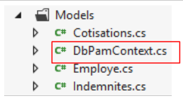 |
La clase [DbPamContext] tendrá el siguiente aspecto:
using Pam.EF5.Entites;
using System.Data.Entity;
namespace Pam.Models
{
public class DbPamContext : DbContext
{
public DbSet<Employe> Employes { get; set; }
public DbSet<Cotisations> Cotisations { get; set; }
public DbSet<Indemnites> Indemnites { get; set; }
}
}
- línea 6: la clase [DbPamContext] deriva de la clase del sistema [DbContext];
- líneas 8–10: las representaciones de objeto de las tres tablas de la base de datos. Su tipo es [DbSet<Entity>], donde [Entity] es una de las entidades de Entity Framework que acabamos de definir. El tipo [DbSet] puede considerarse como una colección de entidades. Se puede consultar mediante LINQ (Language-Integrated Query). Se recomienda a los lectores que no estén familiarizados con LINQ que lean la sección 3.5.4 [Aprender LINQ con LINQPad] en [refEF5].
En adelante nos referiremos a la clase [DbPamContext] como el contexto de persistencia de la base de datos [dbpam_ef5]. Se trata de la terminología estándar en los ORM (mapeadores objeto-relacionales). Este contexto de persistencia es una representación orientada a objetos de la base de datos. También nos referimos a la sincronización del contexto de persistencia con la base de datos: las modificaciones, adiciones y eliminaciones realizadas en el contexto de persistencia se reflejan en la base de datos. Esta sincronización se produce en momentos específicos: cuando se cierra el contexto de persistencia, al final de una transacción o antes de una consulta SQL SELECT en la base de datos.
La información sobre el SGBD y la base de datos se almacena en [App.config].
 |
La configuración necesaria en [app.config] se explica en las siguientes secciones de [refEF5]:
- 3.4 para el SGBD SQL Server. Aquí es donde se exponen los principios fundamentales de la configuración de EF5;
- 4.2 para el SGBD MySQL.
Seguimos esta última sección y configuramos el archivo [app.config] de la siguiente manera:
<?xml version="1.0" encoding="utf-8" ?>
<configuration>
<startup>
<supportedRuntime version="v4.0" sku=".NETFramework,Version=v4.5" />
</startup>
<!-- configuration EF5 -->
<!-- database connection string [dbam_ef5] -->
<connectionStrings>
<add name="DbPamContext"
connectionString="Server=localhost;Database=dbpam_ef5;Uid=root;Pwd=;"
providerName="MySql.Data.MySqlClient" />
</connectionStrings>
<!-- the MySQL factory provider -->
<system.data>
<DbProviderFactories>
<remove invariant="MySql.Data.MySqlClient"/>
<add name="MySQL Data Provider" invariant="MySql.Data.MySqlClient" description=".Net Framework Data Provider for MySQL"
type="MySql.Data.MySqlClient.MySqlClientFactory, MySql.Data, Version=6.5.4.0, Culture=neutral, PublicKeyToken=C5687FC88969C44D"
/>
</DbProviderFactories>
</system.data>
</configuration>
- Se han añadido las líneas 6–21. Deben insertarse dentro de la etiqueta <configuration> en las líneas 2 y 22;
- Líneas 8–12: definen las cadenas de conexión a la base de datos, un concepto de ADO.NET (véase la sección 7.3.5 en [refC#]);
- Líneas 9–11: definen la cadena de conexión a la base de datos MySQL [dbpam_ef5];
- Línea 9: el nombre de la cadena de conexión. Aquí no se puede introducir cualquier cosa. Por defecto, debe introducir el nombre de la clase que implementa el contexto de la base de datos:
public class DbPamContext : DbContext
{
public DbSet<Employe> Employes { get; set; }
public DbSet<Cotisations> Cotisations { get; set; }
public DbSet<Indemnites> Indemnites { get; set; }
}
La clase se llama [DbPamContext]. En la línea 9 de [app.config], debe establecer [name="DbPamContext"];
- Línea 10: una cadena de conexión específica para el SGBD MySQL:
- [Server=localhost]: dirección IP del equipo que aloja el SGBD. En este caso, es el equipo local [localhost];
- [Database=dbpam_ef5;]: nombre de la base de datos,
- [Uid=root;]: el nombre de usuario utilizado para conectarse a la base de datos,
- [Pwd=;]: contraseña para este inicio de sesión. En este caso, no hay contraseña;
- línea 10: [providerName="MySql.Data.MySqlClient"] es el nombre del proveedor ADO.NET que se va a utilizar. Este nombre se corresponde con el atributo [invariant] de la línea 17. Se puede utilizar cualquier nombre siempre que se respete la regla anterior y no se haya registrado ya un proveedor con el mismo invariante;
- Líneas 15-20: definen una fábrica de proveedores ADO.NET. El concepto de [DbProviderFactory] me resulta un tanto confuso. A juzgar por su nombre, parece ser una clase capaz de generar el proveedor ADO.NET que proporciona acceso al SGBD, en este caso MySQL 5. Estas líneas suelen copiarse y pegarse. Son necesarias. Presta atención al atributo [Version=6.5.4.0] de la línea 16. Este número de versión debe coincidir con el número de versión de la DLL [MySql.Data] que has añadido a las referencias del proyecto:
 |
- La línea 16 es importante. Dado que no se pueden instalar dos proveedores con el mismo nombre, empieza por eliminar cualquier proveedor existente que pueda tener el mismo nombre que el que vas a instalar en la línea 17;
Eso es todo. Es complicado y confuso la primera vez que lo haces, pero con el tiempo se vuelve sencillo porque siempre es el mismo proceso que repites.
9.22.6. Probar la capa [EF5]
Ya estamos listos para probar nuestra capa [EF5]. Lo hacemos utilizando el programa [Program.cs] existente:
 |
Mostraremos el contenido de la base de datos. Si lo conseguimos, será una primera indicación de que nuestra configuración es correcta. En la sección 3.5.3 de [refEF5] hay un ejemplo de código disponible. El código para [Program.cs] será el siguiente:
using Pam.EF5.Entites;
using Pam.Models;
using System;
namespace Pam
{
class Program
{
static void Main(string[] args)
{
try
{
using (var context = new DbPamContext())
{
// display table contents
Console.WriteLine("Liste des employés ----------------------------------------");
foreach (Employe employe in context.Employes)
{
Console.WriteLine(employe);
}
Console.WriteLine("Liste des indemnités --------------------------------------");
foreach (Indemnites indemnite in context.Indemnites)
{
Console.WriteLine(indemnite);
}
Console.WriteLine("Liste des cotisations -------------------------------------");
foreach (Cotisations cotisations in context.Cotisations)
{
Console.WriteLine(cotisations);
}
}
}
catch (Exception e)
{
Console.WriteLine(e);
return;
}
}
}
}
- línea 13: todas las operaciones de la base de datos se realizan a través de este contexto de base de datos. Hemos implementado este contexto utilizando la clase [DbPamContext]. También nos referimos a él como el contexto de persistencia de la base de datos;
- líneas 13, 31: las operaciones en el contexto de persistencia se realizan dentro de un bloque [using]. El contexto de persistencia se abre al comienzo del bloque [using] y se cierra automáticamente cuando finaliza el bloque. Esto significa que cualquier cambio realizado en el contexto de persistencia dentro del bloque [using] se reflejará en la base de datos cuando finalice el bloque. A continuación, se envía una serie de sentencias SQL a la base de datos dentro de una transacción. Esto significa que, si una sentencia SQL falla, todas las sentencias SQL emitidas anteriormente se revierten. A continuación, EF5 lanza una excepción;
- línea 17: la expresión [context.Employees] hace referencia al modelo de objetos de la tabla [employees]. Recordemos que [Employees] es una propiedad del contexto de persistencia [DbPamContext]:
public class DbPamContext : DbContext
{
public DbSet<Employe> Employes { get; set; }
public DbSet<Cotisations> Cotisations { get; set; }
public DbSet<Indemnites> Indemnites { get; set; }
}
- línea 17: el hecho de que el bucle [foreach] itere sobre la colección [context.Employees] hará que se recuperen todos los empleados de la base de datos al contexto de persistencia. Por lo tanto, EF5 emitirá una instrucción SQL SELECT;
- líneas 17–20: iteramos por la colección de empleados y, en la línea 19, utilizamos el método [ToString] de la clase [Employee] para mostrar los empleados en la consola;
- líneas 21–25: lo mismo para la colección de prestaciones;
- líneas 27-30: lo mismo para la colección de contribuciones.
Revisemos la definición de la entidad [Employee]:
using System;
namespace Pam.EF5.Entites
{
public class Employe
{
public int Id { get; set; }
public string SS { get; set; }
public string Nom { get; set; }
public string Prenom { get; set; }
public string Adresse { get; set; }
public string Ville { get; set; }
public string CodePostal { get; set; }
public Indemnites Indemnites { get; set; }
public int Versioning { get; set; }
// signature
public override string ToString()
{
return string.Format("Employé[{0},{1},{2},{3},{4},{5}, {6}, {7}]", Id, Versioning, SS, Nom, Prenom, Adresse, Ville, CodePostal);
}
}
}
- Línea 15: Un empleado tiene una referencia a una prestación.
Cuando se introduce a un empleado en el contexto de persistencia, ¿se introduce también su asignación? La respuesta por defecto es no. Este es el concepto de [carga diferida]. Las entidades a las que se hace referencia dentro de otra entidad no se introducen en el contexto de persistencia junto con esa otra entidad. Solo se introducen cuando lo solicita el código dentro de un contexto de persistencia abierto. Si el contexto de persistencia está cerrado, se lanza una excepción.
Por lo tanto, si el método [ToString] hubiera hecho referencia a la propiedad [Indemnites] de la siguiente manera:
// signature
public override string ToString()
{
return string.Format("Employé[{0},{1},{2},{3},{4},{5},{6},{7},{8}]", Id, Versioning, SS, Nom, Prenom, Adresse, Ville, CodePostal, Indemnites);
}
la siguiente operación en [Program.cs]:
foreach (Employe employe in context.Employes)
{
Console.WriteLine(employe);
}
habría devuelto no solo los empleados, sino también sus prestaciones al contexto de persistencia, ya que en la línea 3 se llama al método [Employee.ToString] y este hace referencia a la entidad [Benefits].
Al ejecutar [Program.cs] se obtienen los siguientes resultados:
¿Qué hacer si no funciona? Tienes un problema... Hay muchas posibles causas de error:
- comprueba la configuración de EF5 (sección 9.22.5);
- comprueba tus entidades de Entity Framework (sección 9.22.4).
9.22.7. [EF5] DLL de capa
Estamos convirtiendo nuestro proyecto en una biblioteca de clases para que, al generarlo, se cree un ensamblado .dll en lugar de un .exe. Esto se hace en las propiedades del proyecto, tal y como se ve en la sección 9.7.6, para la capa de negocio simulada.
Tarea: Cambia el tipo de proyecto [pam-ef5] a biblioteca de clases y, a continuación, vuelve a generar el proyecto.
9.23. Paso 16: Implementación de la capa [DAO]
9.23.1. La interfaz de la capa [DAO]
 |
Al igual que hicimos con la capa [business] simulada, se podrá acceder a la capa [DAO] a través de una interfaz. ¿Cuál será?
Veamos la interfaz [IPamMetier] de la capa [business] simulada que hemos creado:
public interface IPamMetier {
// list of all employee identities
Employe[] GetAllIdentitesEmployes();
// ------- salary calculation
FeuilleSalaire GetSalaire(string ss, double heuresTravaillées, int joursTravaillés);
}
Línea 3: El método [GetAllEmployeeIDs] se utiliza para rellenar la lista desplegable de la página de inicio:
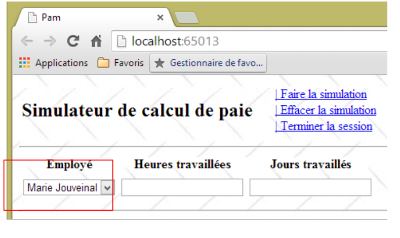 |
Estos empleados deben recuperarse de la base de datos.
En la línea 6, el método [GetSalary] calcula la nómina de un empleado cuyo número de la Seguridad Social se conoce. Recordemos la definición del tipo [PayStub]:
public class FeuilleSalaire
{
// automatic properties
public Employe Employe { get; set; }
public Cotisations Cotisations { get; set; }
public ElementsSalaire ElementsSalaire { get; set; }
}
La información de las líneas 5 y 6 procederá de la base de datos. Recuerda que un empleado tiene una propiedad [Allowances]. Esta información también debe recuperarse.
Por lo tanto, podríamos empezar con la siguiente interfaz para la capa [DAO]:
public interface IPamDao {
// list of all employee identities
Employe[] GetAllIdentitesEmployes();
// an individual employee with benefits
Employe GetEmploye(string ss);
// list of all contributions
Cotisations GetCotisations();
}
9.23.2. El proyecto de Visual Studio
Tarea: Añade un nuevo proyecto [console] llamado [pam-dao] a la solución [pam-td]. Configúralo como proyecto de inicio de la solución.

9.23.3. Añadir las referencias necesarias al proyecto
Echemos un vistazo al proyecto en su conjunto:
 |
El proyecto [pam-dao] requiere varias DLL:
- todas aquellas a las que hace referencia el proyecto [pam-ef5];
- la del propio proyecto [pam-ef5].
Además, utilizaremos [Spring.net] para instanciar la capa [DAO]. Para ello, necesitamos las DLL [Spring.core] y [Common.Logging]. Estas DLL se encuentran en la carpeta [lib] de los materiales del caso práctico.
Tarea: Añade estas referencias al proyecto [pam-dao].
 |
9.23.4. Implementación de la capa [DAO]
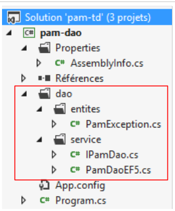 |
Arriba, la clase [PamException] es la definida en la sección 9.7.4. Simplemente cambiamos su espacio de nombres (línea 1 a continuación):
namespace Pam.Dao.Entites
{
// exceptional class
public class PamException : Exception
{
....
}
}
La interfaz [IPamDao] es la que acabamos de definir en la sección 9.23.1:
using Pam.EF5.Entites;
namespace Pam.Dao.Service
{
public interface IPamDao
{
// list of all employee identities
Employe[] GetAllIdentitesEmployes();
// an individual employee with benefits
Employe GetEmploye(string ss);
// list of all contributions
Cotisations GetCotisations();
}
}
La clase [PamDaoEF5] implementa esta interfaz utilizando el ORM de EF5. Su código es el siguiente:
using Pam.Dao.Entites;
using Pam.EF5.Entites;
using Pam.Models;
using System;
using System.Linq;
namespace Pam.Dao.Service
{
public class PamDaoEF5 : IPamDao
{
// private fields
private Cotisations cotisations;
private Employe[] employes;
// Manufacturer
public PamDaoEF5()
{
// contribution
try
{
....
}
catch (Exception e)
{
throw new PamException("Erreur système lors de la construction de la couche [DAO]", e, 1);
}
}
// GetCotisations
public Cotisations GetCotisations()
{
return cotisations;
}
// GetAllIdentitesEmploye
public Employe[] GetAllIdentitesEmployes()
{
return employes;
}
// GetEmploye
public Employe GetEmploye(string SS)
{
try
{
....
catch (Exception e)
{
throw new PamException(string.Format("Erreur système lors de la recherche de l'employé [{0}]", SS), e, 2);
}
}
}
}
Nota:
- línea 10: la clase [PamDaoEF5] implementa la interfaz [IPamDao];
- las tablas [contributions] y [employees] se almacenan en caché en las propiedades de las líneas 13–14. Los empleados no incluyen sus prestaciones;
- líneas 17-28: el constructor inicializa las líneas 13-14;
- Líneas 43-52: el método [GetEmployee] devuelve un empleado junto con sus prestaciones. Toma como parámetro el número de la seguridad social del empleado. Si el empleado no existe en la base de datos, el método devolverá un puntero nulo.
Tarea: Completa el código de la clase [PamDaoEF5].
Para el constructor, utilice como guía el código de prueba de la capa [EF5] que se presenta en la sección 9.22.6. Para el método [GetEmploye], utilice como guía el ejemplo de la sección 3.5.7 [Carga anticipada y diferida] de [refEF5].
9.23.5. Configuración de la capa [DAO]
Al igual que en la sección 9.22.5, debemos configurar EF5 en el archivo [App.config] del proyecto:
 |
Tarea 1: Configurar EF5 en [App.config]. Basta con replicar lo que se hizo en el archivo [App.config] de la capa [EF5].
Nuestro programa de prueba utilizará [Spring.net] para obtener una referencia a la capa [DAO].
Tarea 2: Utilizando la información de la sección 9.20.2, modifique el archivo de configuración [app.config] del proyecto [pam-dao] para que defina un objeto Spring denominado [pamdao] asociado a la clase [PamDaoEF5] que acabamos de crear. Los archivos [app.config] y [web.config] tienen la misma estructura. Asegúrese de que la etiqueta <configSections> sea la primera etiqueta que aparezca después de la etiqueta raíz <configuration>.
9.23.6. Prueba de la capa [DAO]
Ya estamos listos para probar nuestra capa [DAO]. Para ello, utilizaremos el programa [Program.cs] existente:
 |
Probaremos las distintas características de la interfaz de la capa [DAO]. El código de [Program.cs] será el siguiente:
using Pam.Dao.Service;
using Pam.EF5.Entites;
using Spring.Context.Support;
using System;
namespace Pam.Dao.Tests
{
public class Program
{
public static void Main()
{
try
{
// layer instantiation [dao]
IPamDao pamDao = (IPamDao)ContextRegistry.GetContext().GetObject("pamdao");
// list of employee identities
foreach (Employe Employe in pamDao.GetAllIdentitesEmployes())
{
Console.WriteLine(Employe.ToString());
}
// an employee with benefits
Console.WriteLine("------------------------------------");
Employe e = pamDao.GetEmploye("254104940426058");
Console.WriteLine("employé= {0}, indemnités={1}", e, e.Indemnites);
Console.WriteLine("------------------------------------");
// an employee who doesn't exist
Employe employe = pamDao.GetEmploye("xx");
Console.WriteLine("Employé n° xx");
Console.WriteLine((employe == null ? "null" : employe.ToString()));
Console.WriteLine("------------------------------------");
// list of contributions
Cotisations cotisations = pamDao.GetCotisations();
Console.WriteLine(cotisations.ToString());
}
catch (Exception ex)
{
// exception display
Console.WriteLine(ex.ToString());
}
//break
Console.ReadLine();
}
}
}
- Línea 15: Obtenemos una referencia a la capa [DAO] utilizando [Spring.net].
Los resultados de la ejecución de este programa son los siguientes:
9.23.7. DLL de capa [DAO]
Tarea: Convierte el tipo de proyecto [pam-dao] en una biblioteca de clases y, a continuación, vuelve a generar el proyecto (repite los pasos de la sección 9.22.7).
9.24. Paso 17: Configuración de la capa [business]
9.24.1. La interfaz de la capa [business]
 |
La interfaz de la capa [business] será la interfaz [IPamMetier] de la capa [business] simulada que creamos en la sección 9.7.2.
public interface IPamMetier {
// list of all employee identities
Employe[] GetAllIdentitesEmployes();
// ------- salary calculation
FeuilleSalaire GetSalaire(string ss, double heuresTravaillées, int joursTravaillés);
}
9.24.2. El proyecto de Visual Studio
Tarea: Añade un nuevo proyecto [console] llamado [pam-metier] a la solución [pam-td]. Configúralo como proyecto de inicio de la solución.

9.24.3. Añadir las referencias necesarias al proyecto
Echemos un vistazo al proyecto en su conjunto:
 |
El proyecto [pam-metier] requiere varias DLL:
- todas aquellas a las que hacen referencia los proyectos [pam-dao] y [pam-ef5];
- las propias DLL de los proyectos [pam-dao] y [pam-ef5].
Tarea: Añadir estas diversas referencias al proyecto [pam-metier].

9.24.4. Implementación de la capa [business]
 |
Arriba, encontramos cuatro elementos ya utilizados en la capa [business] simulada (véase la sección 9.7). Puede haber cambios en los espacios de nombres importados por estas diferentes clases. Gestiónalos. La clase [PamMetier] implementa la interfaz [IPamMetier] de la siguiente manera:
using Pam.Dao.Service;
using Pam.EF5.Entites;
using Pam.Metier.Entites;
using System;
namespace Pam.Metier.Service
{
public class PamMetier : IPamMetier
{
// reference to layer [DAO] initialized by Spring
public IPamDao PamDao { get; set; }
// list of all employee identities
public Employe[] GetAllIdentitesEmployes()
{
...
}
// an individual employee with benefits
public Employe GetEmploye(string ss)
{
...
}
// contributions
public Cotisations GetCotisations()
{
...
}
// wage calculation
public FeuilleSalaire GetSalaire(string ss, double heuresTravaillées, int joursTravaillés)
{
// SS : employee's SS number
// HeuresTravaillées: number of hours worked
// Days worked: number of days worked
...
}
}
- Línea 13: Tenemos una referencia a la capa [DAO]. Spring la inicializará cuando se instancie la clase [PamMetier]. Por lo tanto, cuando se ejecuten los distintos métodos, la línea 13 ya se habrá inicializado.
Tarea: Completa el código de la clase [PamMetier]. Si en [GetSalaire] detectamos que el empleado con el número de la Seguridad Social no existe, lanzaremos una [PamException]. El método para calcular el salario se explica en la sección 9.5. Asegúrate de redondear todos los cálculos intermedios a dos decimales.
9.24.5. Configuración de la capa [business]
Tal y como se hizo en la sección 9.22.5, debemos configurar EF5 en el archivo [app.config] del proyecto:
 |
Tarea 1: Configurar EF5 en [app.config]. Simplemente reproduce lo que se hizo en el archivo [app.config] de la capa [EF5].
Nuestro programa de pruebas utilizará [Spring.net] para obtener una referencia a la capa [de negocio].
Tarea 2: Utilizando lo que hiciste anteriormente en la sección 9.23.5, modifica el archivo de configuración [app.config] del proyecto [pam-metier] para que defina un objeto Spring llamado [pammetier] asociado a la clase [PamMetier] que acabamos de crear. La forma más sencilla es copiar el archivo [app.config] del proyecto [pam-dao] y añadir lo que falta.
Aquí hay un reto. No solo debes instanciar la capa [business] con la clase [PamMetier], sino que también debes inicializar su propiedad [PamDao]:
// référence sur la couche [DAO] initialisée par Spring
public IPamDao PamDao { get; set; }
La configuración de Spring en [app.config] es entonces la siguiente:
<spring>
<context>
<resource uri="config://spring/objects" />
</context>
<objects xmlns="http://www.springframework.net">
<object id="pamdao" type=" Pam.Dao.Service.PamDaoEF5, pam-dao"/>
<object id="pammetier" type="Pam.Metier.Service.PamMetier, pam-metier">
<property name="PamDao" ref="pamdao" />
</object>
</objects>
</spring>
- línea 6: define el objeto [pamdao] asociado a la clase [PamDaoEF5];
- línea 7: define el objeto [pammetier] asociado a la clase [PamMetier];
- línea 8: la etiqueta [property] se utiliza para inicializar una propiedad pública de la clase [PamMetier]. El atributo [name="PamDao"] corresponde al nombre de la propiedad que se va a inicializar en la clase [PamMetier]. El atributo [ref="pamdao"] indica que la propiedad se inicializa con una referencia, la del objeto [pamdao] de la línea 6, y por lo tanto con la referencia de la capa [DAO]. Esto es lo que queríamos.
9.24.6. Prueba de la capa [business]
Ya estamos listos para probar nuestra capa [business]. Lo hacemos utilizando el programa [Program.cs] existente:
 |
Probaremos las distintas funciones de la interfaz de la capa [business]. El código de [Program.cs] será el siguiente:
using System;
using Pam.Dao.Entites;
using Pam.Metier.Service;
using Spring.Context.Support;
using Pam.EF5.Entites;
namespace Pam.Metier.Tests
{
public class Program
{
public static void Main()
{
try
{
// instantiation layer [business]
IPamMetier pamMetier = ContextRegistry.GetContext().GetObject("pammetier") as IPamMetier;
// list of employee identities
Console.WriteLine("Employés -----------------------------");
foreach (Employe Employe in pamMetier.GetAllIdentitesEmployes())
{
Console.WriteLine(Employe);
}
// payslip calculations
Console.WriteLine("salaires -----------------------------");
Console.WriteLine(pamMetier.GetSalaire("260124402111742", 30, 5));
Console.WriteLine(pamMetier.GetSalaire("254104940426058", 150, 20));
try
{
Console.WriteLine(pamMetier.GetSalaire("xx", 150, 20));
}
catch (PamException ex)
{
Console.WriteLine(string.Format("PamException : {0}", ex.Message));
}
}
catch (Exception ex)
{
Console.WriteLine(string.Format("Exception : {0}, Exception interne : {1}", ex.Message, ex.InnerException == null ? "" : ex.InnerException.Message));
}
// break
Console.ReadLine();
}
}
}
- Línea 16: Obtenemos una referencia a la capa [business] utilizando [Spring.net].
Los resultados de la ejecución de este programa son los siguientes:
9.24.7. DLL de la capa [business]
Tarea: Convertir el tipo de proyecto [pam-business] en una biblioteca de clases y, a continuación, volver a generar el proyecto (repita los pasos de la sección 9.22.7).
9.25. Paso 18: Implementación de la capa [web]
Hemos llegado a la última capa de nuestra arquitectura, la capa [web]:
 |
Reutilizaremos la capa [web] que desarrollamos utilizando una capa [business] simulada.
9.25.1. El proyecto de Visual Studio
Volvemos a Visual Studio Express 2012 for the Web para conectar nuestra capa web a las capas [lógica de negocio, DAO, EF5] que acabamos de desarrollar. Esto implica principalmente algunas configuraciones y unos pocos cambios en los espacios de nombres.
En Visual Studio Express 2012 for Web, carga la solución [pam-td]:
 |
- en [1], la solución [pam-td] en Visual Studio Express for Web. El proyecto web [pam-web-01] vuelve a estar visible. Lo habíamos perdido en Visual Studio Express for Desktop.
- Será necesario modificar la configuración del proyecto web [pam-web-01]. En lugar de modificar un proyecto en funcionamiento, realizaremos los cambios en una copia de este proyecto. En primer lugar, en [2], eliminamos el proyecto de la solución (esto no borra nada del sistema de archivos).
 |
- En [3], utilizando el Explorador de Windows, duplicamos la carpeta [pam-web-01] como [pam-web-02];
- En [4], añadimos el proyecto [pam-web-02] a la solución [pam-td]. Aparece con el nombre [pam-web-01];
- En [5], cambiamos este nombre a [pam-web-02] y establecemos este proyecto como proyecto de inicio;
 |
- En [6], carga el proyecto antiguo [pam-web-01]. Ahora tienes todos tus proyectos. Asegúrate de trabajar con [pam-web-02].
9.25.2. Añadir las referencias necesarias al proyecto
Echemos un vistazo al proyecto en su conjunto:
 |
El proyecto [pam-web-02] requiere varias DLL:
- todas aquellas a las que hacen referencia los proyectos [pam-metier], [pam-dao] y [pam-ef5];
- las propias de los proyectos [pam-metier], [pam-dao] y [pam-ef5].
Tarea: Añade estas referencias al proyecto [pam-web-02]. Se debe eliminar la referencia al proyecto [pam-metier-simule]. Vamos a pasar a la capa [business]. Algunas DLL ya están presentes en las referencias. Elimínalas y, a continuación, realiza las adiciones.

9.25.3. Implementación de la capa [web]
Compile el proyecto [pam-web-02]. Aparecerán errores, como los siguientes:
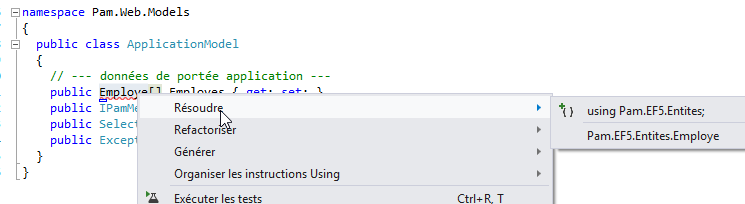
La clase [ApplicationModel] utiliza el tipo [Employee]. Con la capa [business] simulada, este tipo se definió en el espacio de nombres [Pam.Business.Entities]. Ahora se encuentra en el espacio de nombres [Pam.EF5.Entities]. Corrija estos errores tal y como se muestra arriba.
9.25.4. Configuración de la capa [web]
Tal y como se hizo en la sección 9.24.5, debemos configurar EF5 en el archivo [web.config] del proyecto:
 |
Tarea 1: Sustituya todo el contenido actual de [web.config] por el del archivo [app.config] del proyecto [pam-metier].
El archivo [Global.asax] de nuestra aplicación web utiliza [Spring.net] para obtener una referencia a la capa [business]:
try
{
// instantiation layer [business]
application.PamMetier = ContextRegistry.GetContext().GetObject("pammetier") as IPamMetier;
}
catch (Exception ex)
{
application.InitException = ex;
}
Línea 4: Solicitamos una referencia al objeto Spring denominado [pammetier]. Este es, de hecho, el nombre asignado a la capa [business] (compruébalo en tu archivo [web.config]).
9.25.5. Prueba de la capa [web]
Ya estamos listos para probar nuestra capa [web]. En primer lugar, cambiaremos su puerto de trabajo. Por defecto, [pam-web-02] tiene la misma configuración que [pam-web-01] y, por lo tanto, se ejecuta en el mismo puerto. La experiencia demuestra que esto causa problemas: IIS sigue utilizando el código del proyecto [pam-web-01]. Proceda de la siguiente manera:
 |
 |
En [4], cambie el número de puerto, por ejemplo, modificando el dígito de las unidades.
Ejecute el proyecto [pam-web-02] pulsando [Ctrl-F5]. A continuación, verá la siguiente página de inicio:
 |
En [1], recuperamos los empleados de la base de datos [dbpam_ef5]. Observe que el empleado [X X], que estaba presente en la capa [business] simulada, ya no aparece. Ejecutemos una simulación:
 |
En [2], vemos el salario real en lugar de uno ficticio. Ahora detengamos el SGBD MySQL5 y ejecutemos otra simulación:
 |
En [3], obtuvimos una página de error legible, aunque algunos mensajes están en inglés. Ahora detengamos MySQL de nuevo y volvamos a ejecutar la aplicación en VS con [Ctrl-F5]:

Obtenemos la vista [initFailed.cshtml] creada en la sección 9.20.4. Muestra los mensajes de error de la pila de excepciones. Se invita al lector a realizar más pruebas.
9.26. Paso 19: Hacer que una aplicación ASP.NET sea accesible en Internet
Al desarrollar una aplicación ASP.NET con Visual Studio, la configuración predeterminada garantiza que solo se pueda acceder a la aplicación desde la dirección [localhost]. El servidor integrado de Visual Studio rechaza cualquier otra dirección y devuelve el error [400 Bad Request].
Esto se puede observar de la siguiente manera:
- En una ventana de DOS, anota la dirección IP de tu equipo de desarrollo:
Microsoft Windows [version 6.3.9600]
(c) 2013 Microsoft Corporation. Tous droits réservés.
dos>ipconfig
Configuration IP de Windows
Carte Ethernet Connexion au réseau local :
Suffixe DNS propre à la connexion. . . : ad.univ-angers.fr
Adresse IPv6 de liaison locale. . . . .: fe80::698b:455a:925:6b13%4
Adresse IPv4. . . . . . . . . . . . . .: 172.19.81.34
Masque de sous-réseau. . . . . . . . . : 255.255.0.0
Passerelle par défaut. . . . . . . . . : 172.19.0.254
Carte réseau sans fil Wi-Fi :
Statut du média. . . . . . . . . . . . : Média déconnecté
Suffixe DNS propre à la connexion. . . :
La dirección IP se muestra aquí en la línea 14. Si tienes una conexión Wi-Fi, la dirección Wi-Fi del dispositivo aparecerá en las líneas 20 y siguientes.
- Compruebe las propiedades del proyecto [clic derecho en el proyecto / propiedades / pestaña web]:
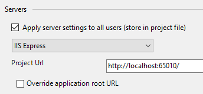
La aplicación se ejecutará en el puerto [65010] del equipo [localhost].
- Ejecute el proyecto pulsando [Ctrl-F5]

- Sustituye [localhost] por la dirección IP del ordenador:

El servidor ha devuelto una respuesta [400 Bad Request]. El servidor IIS Express que utiliza Visual Studio solo acepta el nombre [localhost].
Para que la aplicación desarrollada sea accesible en una URL como [http://adresseIP/contexte/...], debe utilizar un servidor distinto de IIS Express, como un servidor IIS (no Express). Para comprobar si está disponible (normalmente en las versiones Pro de Windows), vaya al Panel de control [Panel de control\Sistema y seguridad\Herramientas administrativas]:

Esta opción no siempre está presente. En ese caso, vaya a [Panel de control \ Programas] e instale las Herramientas de administración web.
 |
Una vez que la opción [Administrador de Servicios de Información de Internet (IIS)] esté disponible, actívela:
 |
Inicie el sitio web predeterminado. Para ello, primero debe estar en ejecución el [Servicio de publicación en la World Wide Web]:
 |
Una vez hecho esto, introduzca la URL [http://localhost] en un navegador. En primer lugar, compruebe que ningún otro servidor web esté utilizando ya el puerto 80. Si es así, deténgalo.
 |
El servidor IIS ha respondido. Ahora sustituya [localhost] por la dirección IP de su ordenador:
 |
Funciona. Ahora volvamos a Visual Studio:
- En primer lugar, debes iniciar Visual Studio en modo [Administrador]
 |
Una vez hecho esto, debes cambiar la configuración del proyecto web que deseas implementar [haz clic con el botón derecho del ratón en el proyecto / Propiedades / pestaña Web]:
 |
Debes seleccionar el servidor IIS local como servidor de implementación. Visual Studio establece la URL de la aplicación. Puedes cambiarla. Ejecuta el proyecto pulsando [Ctrl-F5]:
 |
Ahora sustituya [localhost] por la dirección IP de su ordenador:
 |
Si no dispone de un servidor IIS, puede utilizar un servidor ASP.NET gratuito como [Ultidev Web Server Pro], disponible en la URL [http://ultidev.com/Download/]. Una vez instalado, hay dos formas de iniciar una aplicación web con este servidor:
La forma rápida
Abre el Explorador de Windows y selecciona la carpeta que contiene la aplicación ASP.NET que deseas implementar:
 |
A continuación, se iniciará el servidor web y la aplicación web se mostrará en un navegador:
 |
- En [3], puedes detener o iniciar el servidor web;
- En [4], puede cambiar el puerto de servicio de la aplicación web;
Antes de iniciar el servidor, el servicio [UWS HiPriv Services] que aparece a continuación debe estar en ejecución:
 |
Una vez que el servidor está en funcionamiento, la interfaz tiene este aspecto:
 |
Al hacer clic en el enlace [6] se muestra la primera página de la aplicación:
 |
A continuación, puede introducir la dirección IP del equipo en lugar de [localhost]:
 |
Así que aquí también solo se acepta el nombre [localhost].
El método largo
Inicie la aplicación Ultidev Web Explorer
 |
y sigue estos pasos:
 |
 |
 |
- En [8], especifique la carpeta de la aplicación web que se va a implementar;
 |
- En [10-11], se debe acceder a la aplicación web a través de la URL [http://localhost:81/];
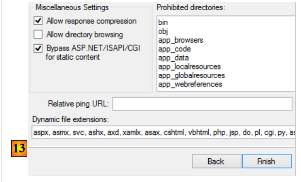 |
 |
- Inicie el servidor web utilizando [14];
 |
- acceda a la URL [19];
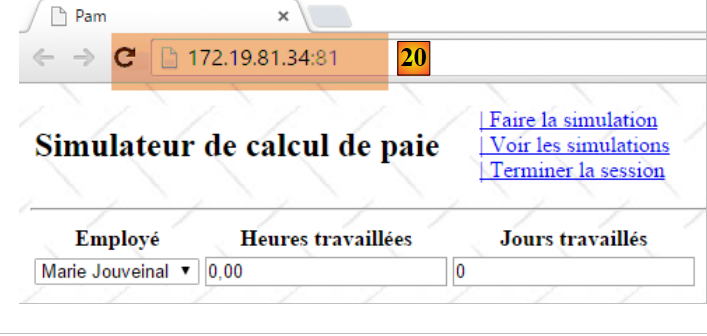 |
- En [20], pudimos acceder a la página deseada utilizando la dirección IP local del equipo en lugar del nombre [localhost]. Eso era exactamente lo que buscábamos;
El servidor Ultidev está instalado como un servicio de Windows que se inicia automáticamente. Puede desactivar el inicio automático del servidor Ultidev de la siguiente manera:
- Vaya a [Panel de control\Sistema y seguridad\Herramientas administrativas];
 |
- [1, 2]: Seleccione las propiedades del servicio [Ultidev Web Server Pro];
- [3]: Configúrelo para que se inicie manualmente.
Para iniciar el servidor manualmente, utilice la aplicación [Ultidev Web Explorer], por ejemplo:
 |
9.27. Paso 20: Generación de una aplicación nativa para Android
Si dispone de una aplicación de página única (SPA), puede generar un ejecutable móvil (Android, iOS, Windows 8, etc.) utilizando la herramienta [PhoneGap] [http://phonegap.com/]. Existen otras formas de hacerlo, en particular con el producto de código abierto Apache Cordova [https://cordova.apache.org/]. La herramienta en línea disponible en el sitio web de PhoneGap [http://build.phonegap.com/apps] «sube» el archivo ZIP del sitio que se va a convertir. La página de inicio debe llamarse [index.html] y debe ser una página estática, es decir, no generada por un marco web (ASP.NET, JEE, PHP, etc.). Comenzaremos por crear esta página.
9.27.1. La arquitectura de la aplicación
Es importante recordar aquí que queremos crear una aplicación para Android. Este tipo de aplicaciones suele tener la siguiente arquitectura:
 |
- en [1], el usuario utiliza una tableta Android que se comunica con uno o varios servicios web [2];
Volvamos al modelo APU:
 |
- se carga una página inicial en el navegador (el diagrama anterior no especifica de dónde procede);
- las vistas posteriores se recuperan mediante llamadas Ajax [1-4]. El navegador no cargará ninguna página nueva;
La vista inicial puede ser servida o no por el mismo servidor que las demás vistas recuperadas mediante llamadas Ajax. Si no es servida por el mismo servidor, el JavaScript de la página inicial debe conocer la URL del servidor web que proporcionará las demás vistas. Este será el caso de la aplicación para Android que vamos a desarrollar:
 |
- la página estática [index.html] se encapsulará dentro de una aplicación nativa de Android [1] que tiene capacidades de navegador y, por lo tanto, es capaz de ejecutar el JavaScript incrustado en la página [index.html];
- esta página recuperará las otras vistas mediante llamadas Ajax al servidor [2]. Para ello, necesita conocer la URL del servidor web;
Reestructuraremos la aplicación [pam-web-02] para que funcione en este modo. Así, la primera página quedará de la siguiente manera:
 |
- en [1], la URL de la página inicial de la aplicación. Esta será proporcionada por el servidor Ultidev mencionado en la sección 9.26;
- en [2], el usuario debe introducir la URL del simulador de nóminas. Podríamos codificarla de forma fija en el JavaScript de la página inicial, pero eso complicaría las pruebas: tan pronto como cambiáramos la dirección IP (o el puerto) del simulador, tendríamos que cambiarla en el código JavaScript;
- en [3], el enlace [Iniciar sesión] que mostrará la siguiente vista:
 |
- Obsérvese que en [4] la URL del navegador no ha cambiado. Sigue siendo la de la página inicial y seguirá siéndolo durante toda la vida útil de la aplicación.
Una vez cargada esta vista, todo funciona como antes: las diferentes vistas se cargan mediante llamadas Ajax. Veremos que apenas hay que modificar el código.
9.27.2. Refactorización del proyecto [pam-web-02]
Dentro de la carpeta [Content] del proyecto [pam-web-02], creamos la siguiente carpeta [bootstrap] (el nombre no importa):
 |
Hemos incluido la página estática [index.html] y todos los recursos que necesita (archivos CSS y JS). La página [index.html] utiliza el código de la página maestra [_Layout.cshtml] del proyecto de Visual Studio, eliminando todo lo que no es estático. Esto da como resultado el siguiente código:
<!DOCTYPE html>
<html xmlns="http://www.w3.org/1999/xhtml">
<head>
<title>Simulateur de paie</title>
<meta charset="utf-8" />
<meta name="viewport" content="width=device-width" />
<link rel="stylesheet" href="Site.css" />
<script type="text/javascript" src="jquery-1.8.2.min.js"></script>
<script type="text/javascript" src="jquery.validate.min.js"></script>
<script type="text/javascript" src="jquery.validate.unobtrusive.min.js"></script>
<script type="text/javascript" src="globalize.js"></script>
<script type="text/javascript" src="globalize.culture.fr-FR.js"></script>
<script type="text/javascript" src="jquery.unobtrusive-ajax.min.js"></script>
<script type="text/javascript" src="myScripts.js"></script>
</head>
<body>
<table>
<tbody>
<tr>
<td>
<h2>Simulateur de calcul de paie</h2>
</td>
<td style="width: 20px">
<img id="loading" style="display: none" src="indicator.gif" />
</td>
<td>
<a id="lnkConnexion" href="javascript:connexion()">
| Connexion<br />
</a>
<a id="lnkFaireSimulation" href="javascript:faireSimulation()">
| Faire la simulation<br />
</a>
<a id="lnkEffacerSimulation" href="javascript:effacerSimulation()">
| Effacer la simulation<br />
</a>
<a id="lnkVoirSimulations" href="javascript:voirSimulations()">
| Voir les simulations<br />
</a>
<a id="lnkRetourFormulaire" href="javascript:retourFormulaire()">
| Retour au formulaire de simulation<br />
</a>
<a id="lnkEnregistrerSimulation" href="javascript:enregistrerSimulation()">
| Enregistrer la simulation<br />
</a>
<a id="lnkTerminerSession" href="javascript:terminerSession()">
| Terminer la session<br />
</a>
</td>
</tbody>
</table>
<hr />
<div id="content">
<table>
<tr>
<td>URL du simulateur</td>
<td><input type="text" id="urlServiceWeb" name="urlServiceWeb" size="80"></td>
</tr>
</table>
<div id="erreur">
<h3>Réponse du serveur :</h3>
<div id="erreur1"></div>
<div id="erreur2"></div>
</div>
</div>
</body>
</html>
Hemos añadido lo siguiente:
- líneas 27-29: hemos añadido la opción de menú [Iniciar sesión] para permitir la conexión al servicio de simulación;
- líneas 55-56: el campo de entrada de la URL del simulador;
- líneas 59-63: un mensaje de error si falla la conexión;
La refactorización del código se realiza únicamente en el código [myScripts.js] en la línea 14 anterior. No hay más cambios. El código evoluciona de la siguiente manera:
// au chargement du document
$(document).ready(function () {
// on récupère les références des différents composants de la page
loading = $("#loading");
content = $("#content");
erreur = $("#erreur");
erreur1 = $("#erreur1");
erreur2 = $("#erreur2");
// les liens du menu
lnkConnexion = $("#lnkConnexion");
lnkFaireSimulation = $("#lnkFaireSimulation");
lnkEffacerSimulation = $("#lnkEffacerSimulation");
lnkEnregistrerSimulation = $("#lnkEnregistrerSimulation");
lnkVoirSimulations = $("#lnkVoirSimulations");
lnkTerminerSession = $("#lnkTerminerSession");
lnkRetourFormulaire = $("#lnkRetourFormulaire");
// on les met dans un tableau
options = [lnkConnexion, lnkFaireSimulation, lnkEffacerSimulation, lnkEnregistrerSimulation, lnkVoirSimulations, lnkTerminerSession, lnkRetourFormulaire];
// on cache certains éléments de la page
loading.hide();
erreur.hide();
// on fixe le menu
setMenu([lnkConnexion]);
});
- líneas 6-8: los ID del área que muestra los errores de conexión en la página [index.html];
- línea 10: el nuevo enlace para conectarse al simulador;
- línea 21: el área de error está oculta inicialmente;
- línea 23: solo se muestra el enlace de conexión;
En la página [index.html], el enlace de conexión se define de la siguiente manera:
<a id="lnkConnexion" href="javascript:connexion()">
| Connexion<br />
</a>
La función JS [connexion] (línea 1) es la siguiente:
var urlServiceWeb;
var erreur, erreur1, erreur2;
function connexion() {
// retrieve the urlServiceWeb from the web service
urlServiceWeb = $("#urlServiceWeb").val();
// retrieve the input form
$.ajax({
url: urlServiceWeb + '/Pam/Formulaire',
type: 'POST',
dataType: 'html',
beforeSend: function () {
// wait signal on
loading.show();
},
success: function (data) {
// displaying results
content.html(data);
// menu
setMenu([lnkFaireSimulation]);
},
error: function (jqXHR) {
erreur2.html(jqXHR.responseText);
erreur1.html(jqXHR.getAllResponseHeaders().replace(/\r\n/g, "<br/>").replace(/\r/g, "<br/>").replace(/\n/g, "<br/>"));
erreur.show();
},
complete: function () {
// wait signal off
loading.hide();
}
});
}
- línea 7: recuperamos la URL introducida por el usuario. Se almacena en la variable global de la línea 1. De esta forma, estará disponible en las demás funciones del archivo;
- línea 10: Realizamos una llamada Ajax a la URL del simulador [/Pam/Form]. Esta URL muestra la vista parcial para introducir los datos de simulación (empleados, horas trabajadas, días trabajados). En la versión inicial de [pam-web-02], esta URL era suficiente. Se le añadía automáticamente como prefijo la URL que había abierto la página inicial. Ahora, suponemos que la página inicial puede ser servida por un servidor distinto al que aloja el simulador. Por lo tanto, la URL [/Pam/Formulaire] debe ir precedida de la variable [urlServiceWeb] de la línea 1, que es la URL del simulador (por ejemplo, http://172.19.81.34/pam-web-02). Esto debe hacerse para todas las llamadas Ajax del archivo;
- líneas 17-22: si la conexión se establece correctamente, se muestra la vista parcial [Formulaire.cshtml] y aparece un menú que contiene únicamente el enlace [Run Simulation] (línea 21);
- líneas 23-27: si la conexión falla:
- en la línea 24, se muestra la respuesta HTML enviada por el servidor web (si la hay);
- en la línea 25, se muestran los encabezados HTTP enviados por el servidor web (si ha respondido);
Eso es todo. Si se realiza correctamente, se muestra la siguiente página:
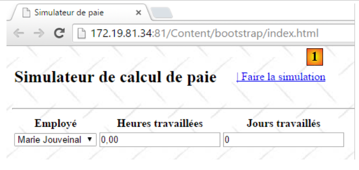 |
Ahora nos encontramos en la situación anterior, en la que las vistas se obtienen mediante llamadas Ajax. Por lo tanto, como se muestra arriba, al hacer clic en el enlace [Run Simulation] se ejecutará el siguiente código del archivo [myScripts.js]:
function faireSimulation() {
// on récupère des références
var simulation = $("#simulation");
var formulaire = $("#formulaire");
// formulaire valide ?
var formValid = formulaire.validate().form();
if (!formValid) return;
// on fait un appel Ajax à la main
$.ajax({
url: urlServiceWeb + '/Pam/FaireSimulation',
type: 'POST',
data: formulaire.serialize(),
dataType: 'html',
...
});
// menu
setMenu([lnkEffacerSimulation, lnkEnregistrerSimulation, lnkTerminerSession, lnkVoirSimulations]);
}
- Se ha realizado un único cambio, en la línea 10, donde la URL anterior ahora va precedida de la URL del simulador;
9.27.3. Prueba del proyecto refactorizado
En la sección 9.26, mostramos cómo instalar la aplicación [pam-web-02] en el servidor Ultidev. Partiremos de ahí:
 |
- En [6], solicitamos la visualización de la página [bootstrap/index.html]. Obtenemos la siguiente vista:
 |
Introduzcamos una URL incorrecta:
 |
- en [10], los encabezados HTTP de la respuesta del servidor;
- en [11], el documento HTML de la respuesta del servidor;
Si introduces la URL correcta:
 |
obtenemos la siguiente respuesta:
 |
9.27.4. Creación del binario de Android
Crearemos el binario de Android a partir del sitio estático que acabamos de crear y probar[1]:


Añadimos en [2] un archivo [config.xml] que se utilizará para configurar el complemento [Phonegap], el cual generará el binario para Android. Su código es el siguiente:
<?xml version='1.0' encoding='utf-8'?>
<widget id="android.exemples.pam" version="0.0.1" xmlns="http://www.w3.org/ns/widgets" xmlns:cdv="http://cordova.apache.org/ns/1.0">
<name>Pam</name>
<description>
IstiA - Université d'Angers
</description>
<author email="serge.tahe@univ-angers.fr">
Serge Tahé
</author>
<content src="index.html" />
<access origin="*" />
<allow-navigation href="*" />
<allow-intent href="*" />
<plugin name="cordova-plugin-whitelist" />
</widget>
- líneas 7-9: introduce aquí tu información de contacto;
- líneas 11-13: estas líneas permiten que el JavaScript integrado en la aplicación web, que se ejecutará en el dispositivo Android, solicite URL externas al dispositivo;
Comprimimos el contenido de la carpeta [Content/bootstrap]:

A continuación, ve al sitio web de PhoneGap [http://build.phonegap.com/apps]:
 |
- Antes de [1], es posible que tengas que crear una cuenta;
- en [1], empezamos;
- en [2], elige un plan gratuito que permita solo una aplicación de PhoneGap;
- en [3], descarga la aplicación comprimida [4];
 |
 |
- en [5], introduce el nombre de la aplicación;
- haz clic en el enlace [6] para compilar los binarios para iOS, Android y Windows. Esto puede tardar unos segundos;
 |
- En [7-9], descargue el binario para Android;
 |
Inicie un emulador [GenyMotion] para una tableta Android (véase la sección 11.1):

Arriba, iniciamos un emulador de tableta con la API 21 de Android. Una vez que el emulador esté en funcionamiento,
- desbloquéalo arrastrando el candado (si aparece) hacia un lado y soltándolo;
- Con el ratón, arrastre el archivo [Pam-debug.apk] que ha descargado y suéltelo en el emulador. A continuación, se instalará y se ejecutará;
 |
Introduce [1] la URL del simulador tal y como se describe en la sección 9.27.3. Una vez hecho esto, conéctate al simulador utilizando el enlace [2]:

Pruebe la aplicación en el emulador. Debería funcionar.